pacman::p_load(sf, sfdep,spdep, tmap, tidyverse,ggplot2,plotly,Kendall)Take home Exercise2
Discovering impacts of COVID-19 on Thailand tourism economy at the province level using spatial and spatio-temporal statistics

The scene
Tourism is one of Thailand’s largest industries, accounting for some 20% of the gross domestic product (GDP). In 2019, Thailand earned 90 billion US$ from domestic and international tourism, but the COVID-19 pandemic caused revenues to crash to 24 billion US$ in 2020.
As a curious geospatial analytics green horn, we are interested to discover:
If the key indicators of tourism economy of Thailand are independent from space and space and time.
If the tourism economy is indeed spatial and spatio-temporal dependent, then, you would like to detect where are the clusters and outliers, and the emerging hot spot/cold spot areas.
The specific tasks of this take-home exercise are as follows:
Using appropriate function of sf and tidyverse, preparing the following geospatial data layer:
a study area layer in sf polygon features. It must be at province level (including Bangkok) of Thailand.
a tourism economy indicators layer within the study area in sf polygon features.
a derived tourism economy indicator layer in spacetime s3 class of sfdep. Keep the time series at month and year levels.
Using the extracted data, perform global spatial autocorrelation analysis by using sfdep methods.
Using the extracted data, perform local spatial autocorrelation analysis by using sfdep methods.
Using the extracted data, perform emerging hotspot analysis by using sfdep methods
Describe the spatial patterns revealed by the analysis above.
The Data
For the purpose of this take-home exercise, two data sets shall be used, they are:
Thailand Domestic Tourism Statistics at Kaggle. we are required to use version 2 of the data set.
Thailand - Subnational Administrative Boundaries at HDX. we are required to use the province boundary data set.
Getting Started
1.Getting the Data Into R Environment
Import csv file into r environment
tt1923 <- read_csv("data/rawdata/thailand_domestic_tourism_2019_2023_ver2.csv")Rows: 30800 Columns: 7
── Column specification ────────────────────────────────────────────────────────
Delimiter: ","
chr (5): province_thai, province_eng, region_thai, region_eng, variable
dbl (1): value
date (1): date
ℹ Use `spec()` to retrieve the full column specification for this data.
ℹ Specify the column types or set `show_col_types = FALSE` to quiet this message.Import shapefile into r environment
b1 <- st_read(dsn = "data/rawdata",
layer = "tha_admbnda_adm1_rtsd_20220121")Reading layer `tha_admbnda_adm1_rtsd_20220121' from data source
`/Users/yangyayong/Downloads/学校文件/smu文件/Term 3/G/yyyirene/ISSS626-GAA/Take_home_Ex/Take_home_Ex02/data/rawdata'
using driver `ESRI Shapefile'
Simple feature collection with 77 features and 16 fields
Geometry type: MULTIPOLYGON
Dimension: XY
Bounding box: xmin: 97.34336 ymin: 5.613038 xmax: 105.637 ymax: 20.46507
Geodetic CRS: WGS 84A tourism economy indicators layer within the study area in sf polygon features.
na_rows <- tt1923[is.na(tt1923$region_eng), ]
na_rows# A tibble: 0 × 7
# ℹ 7 variables: date <date>, province_thai <chr>, province_eng <chr>,
# region_thai <chr>, region_eng <chr>, variable <chr>, value <dbl>As can be seen from the figure, na_rows is a data frame containing 0 rows, which #means that is.na(tt1923_selected$region_eng) did not match any NA values, so no rows #were filtered out. Therefore, it can be confirmed that there are no missing values #in the region_eng column.
Check the number of unique values for different columns in a dataset and list the unique entries in a specific column
unique_counts <- sapply(tt1923, n_distinct)
print(unique_counts) date province_thai province_eng region_thai region_eng
50 77 77 5 5
variable value
8 23267 unique(tt1923$region_eng)[1] "central" "east" "south" "north"
[5] "east_northeast"The code unique(tt1923$variable) retrieves all unique values in the variable column in the tt1923 dataset. The output shows 8 different variable names in the column, representing different tourism-related indicators.
unique(tt1923$variable)[1] "ratio_tourist_stay" "no_tourist_stay" "no_tourist_all"
[4] "no_tourist_thai" "no_tourist_foreign" "revenue_all"
[7] "revenue_thai" "revenue_foreign" Data Wrangling
1.Selecting the indicators
In this assignment,i mainly focus on these three indicator:
no_tourist_thai - number of local tourists
no_tourist_foreign - number of foreign tourists
ratio_tourist_stay - ratio of tourists staying
There are 5 different region names in the region_eng column: “central”, “east”, “south”, “north”, and “east_northeast”
unique(tt1923$region_eng)[1] "central" "east" "south" "north"
[5] "east_northeast"region_total_revenue <- tt1923 %>%
filter(variable == "revenue_all") %>%
group_by(region_eng) %>%
summarise(total_revenue = sum(value, na.rm = TRUE)) region_total_revenue <- region_total_revenue %>%
arrange(desc(total_revenue))
ggplot(region_total_revenue, aes(x = reorder(region_eng, total_revenue), y = total_revenue, fill = region_eng)) +
geom_bar(stat = "identity") +
labs(title = "Total Tourism Revenue by Region", x = "Region", y = "Total Revenue") +
theme_minimal() +
coord_flip() +
guides(fill = "none")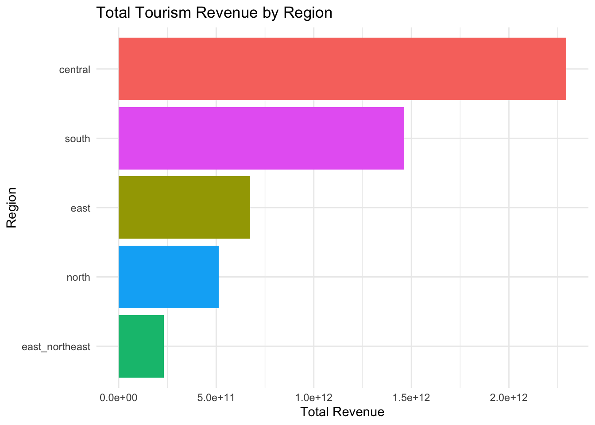
From the perspective of tourism revenue, Central (Central Region) is the most valuable area because its tourism revenue is significantly higher than other regions, especially Bangkok, as an important transportation hub and cultural center, attracting a large number of domestic and international tourists.
2.Selecting the research area
Next, we select the central region as our research area.
tb_sc <- tt1923 %>%
filter(region_eng == "central") %>%
select(date, province_eng, region_eng, variable,value)central_provinces <- tb_sc %>%
filter(region_eng == "central") %>%
select(province_eng) %>%
distinct()
central_provinces# A tibble: 18 × 1
province_eng
<chr>
1 Bangkok
2 Lopburi
3 Phra Nakhon Si Ayutthaya
4 Saraburi
5 Chainat
6 Nakhon Pathom
7 Sing Buri
8 Ang Thong
9 Nonthaburi
10 Pathum Thani
11 Samut Prakan
12 Samut Sakhon
13 Ratchaburi
14 Kanchanaburi
15 Samut Songkhram
16 Suphan Buri
17 Phetchaburi
18 Prachuap Khiri Khan To ensure geographic consistency, we delete two regions that are not included in the boundary data.
tb_sc_filtered <- tb_sc %>%
filter(!(province_eng %in% c("Lopburi", "Chainat")))selected_provinces <- c(
"Bangkok", "Lopburi", "Phra Nakhon Si Ayutthaya", "Saraburi", "Chainat",
"Nakhon Pathom", "Sing Buri", "Ang Thong", "Nonthaburi", "Pathum Thani",
"Samut Prakan", "Samut Sakhon", "Ratchaburi", "Kanchanaburi",
"Samut Songkhram", "Suphan Buri", "Phetchaburi", "Prachuap Khiri Khan"
)To reduce data cache, we select the columns to be studied
b1_filtered <- b1 %>%
filter(ADM1_EN %in% selected_provinces) %>%
select(ADM1_EN, Shape_Area, Shape_Leng, geometry)Now we plot the study area
plot(b1_filtered)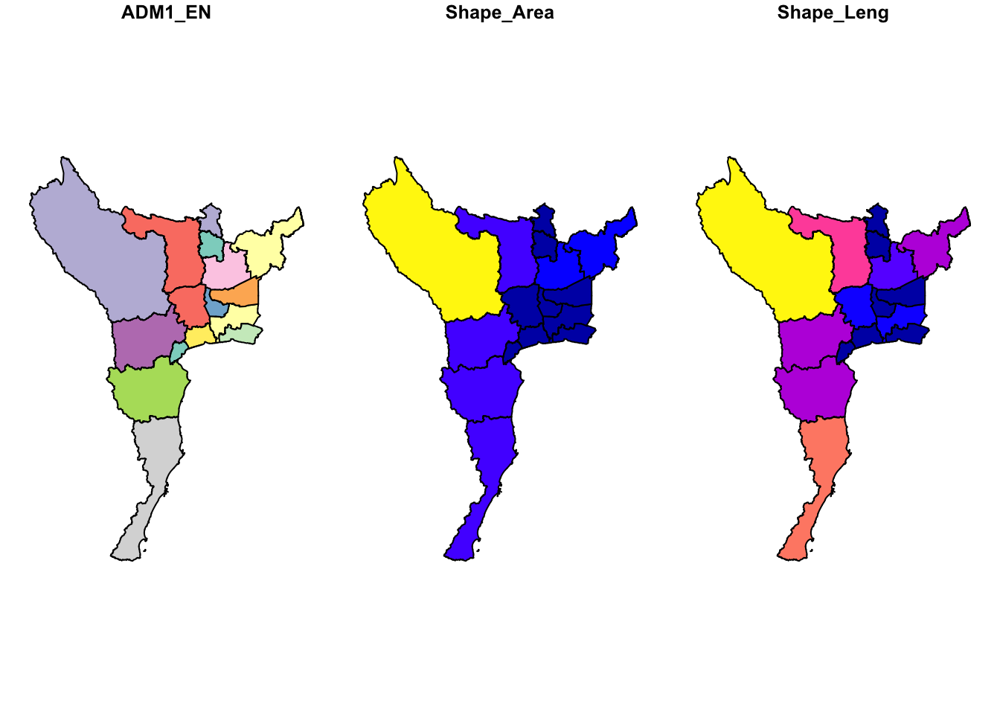
3.Combining data
By merging these two datasets, we can get both geographic and economic attribute data in one data frame, which makes it easier to perform analysis or visualization
merged_data <- left_join(b1_filtered, tb_sc_filtered, by = c("ADM1_EN" = "province_eng"))Check if there are any missing values after merging
na_rows2 <- merged_data[is.na(merged_data$region_eng), ]
merged_data_date <- merged_data %>%
mutate(
YearMonth = as.integer(format(date, "%Y%m"))
)na_rows2 <- merged_data_date[is.na(merged_data_date$region_eng), ]
na_rows2Simple feature collection with 0 features and 8 fields
Bounding box: xmin: NA ymin: NA xmax: NA ymax: NA
Geodetic CRS: WGS 84
[1] ADM1_EN Shape_Area Shape_Leng date region_eng variable value
[8] geometry YearMonth
<0 rows> (or 0-length row.names)Since the return result is empty, it means that the region_eng column in merged_data has no missing values.
Finally check the central provinces that we need.
central_provinces2 <- unique(merged_data %>% dplyr::pull(ADM1_EN))
print(central_provinces2) [1] "Bangkok" "Samut Prakan"
[3] "Nonthaburi" "Pathum Thani"
[5] "Phra Nakhon Si Ayutthaya" "Ang Thong"
[7] "Sing Buri" "Saraburi"
[9] "Ratchaburi" "Kanchanaburi"
[11] "Suphan Buri" "Nakhon Pathom"
[13] "Samut Sakhon" "Samut Songkhram"
[15] "Phetchaburi" "Prachuap Khiri Khan" 4.Perform three economic indicators
From data provided,we perform three economic indicators：
Tourists Quantity Indicators
Firstly,filter the data to generate two new data sets, representing the number of local tourists and foreign tourists in Thailand respectively.
tourist_numbers_thai <- merged_data_date %>%
filter(variable %in% c( "no_tourist_thai"))
tourist_numbers_foreign <- merged_data %>%
filter(variable %in% c( "no_tourist_foreign"))Then we focus on yearly analysis.
Aggregate data by year
tourist_numbers_thai_yearly <- tourist_numbers_thai %>%
mutate(year = lubridate::year(date)) %>%
group_by(ADM1_EN, year) %>%
summarise(total_value = sum(value, na.rm = TRUE)) %>%
ungroup()tourist_numbers_foreign_yearly <- tourist_numbers_foreign %>%
mutate(year = lubridate::year(date)) %>%
group_by(ADM1_EN, year) %>%
summarise(total_value = sum(value, na.rm = TRUE)) %>%
ungroup()saveRDS(): Saves the data object as a .rds file for quick loading and use later.
readRDS(): Reads the saved data object from a .rds file to avoid recalculation or processing.
saveRDS(tourist_numbers_thai_yearly,"data/rds/tourist_numbers_thai_yearly.rds")tourist_numbers_thai_yearly <- readRDS("data/rds/tourist_numbers_thai_yearly.rds")saveRDS(tourist_numbers_foreign_yearly,"data/rds/tourist_numbers_foreign_yearly.rds")tourist_numbers_foreign_yearly <-readRDS("data/rds/tourist_numbers_foreign_yearly.rds")Keep the time series at month and year levels
We aggregate by year to calculate the total number of tourists per province per year.
4.1Total Local Tourists (Yearly)
Equal
Show the code
tmap_mode("plot")tmap mode set to plottingShow the code
tm_shape(tourist_numbers_thai_yearly) +
tm_fill("total_value",
style = "equal",
palette = "Blues",
title = "Total Local Tourists(Quantile Classification)") +
tm_borders(alpha = 0.5) +
tm_facets(by = "year") +
tm_layout(main.title = "Total Local Tourists(Quantile Classification)",
main.title.size = 0.7,
legend.width = 1.2,
legend.text.size = 0.8)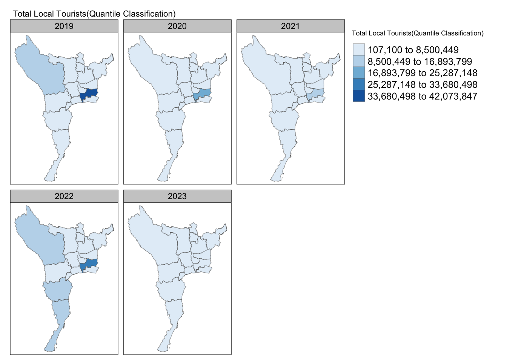
Quantile
Show the code
tmap_mode("plot")tmap mode set to plottingShow the code
tm_shape(tourist_numbers_thai_yearly) +
tm_fill("total_value",
style = "quantile",
palette = "Blues",
title = "Total Local Tourists(Quantile Classification)") +
tm_borders(alpha = 0.5) +
tm_facets(by = "year") +
tm_layout(main.title = "Total Local Tourists(Quantile Classification)",
main.title.size = 0.7,
legend.width = 1.2,
legend.text.size = 0.8)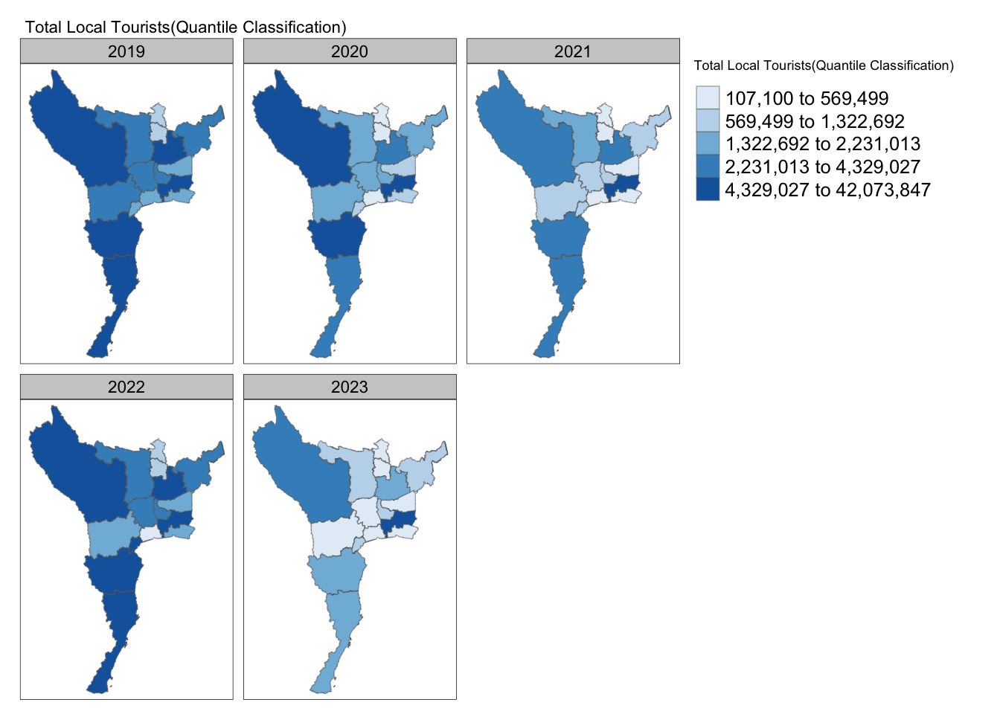
Tourist concentration areas: The first picture shows the trend of tourists continuing to concentrate in the central region, while the second picture reveals the details of the fluctuations in the number of tourists, especially in 2020 and 2022, when tourists were more evenly distributed in the south and the central region.
Classification: The second picture is more detailed, allowing us to observe more regional differences, even areas with lower tourist numbers are distinguished.
Trend: In both pictures, it can be seen that the number of tourists in 2019 and 2022 was more concentrated, while 2020 and 2023 showed different degrees of tourist distribution, especially fluctuations in the central and southern regions.
4.2Total Foreign Tourists (Yearly)
Equal
tourist_numbers_foreign_yearly <- tourist_numbers_foreign %>%
mutate(year = lubridate::year(date)) %>%
group_by(ADM1_EN, year) %>%
summarise(total_value = sum(value, na.rm = TRUE)) %>%
ungroup()`summarise()` has grouped output by 'ADM1_EN'. You can override using the
`.groups` argument.Show the code
tmap_mode("plot")tmap mode set to plottingShow the code
tm_shape(tourist_numbers_foreign_yearly) +
tm_fill("total_value",
style = "equal",
palette = "Greens",
title = "Total Foreign Tourists(Equal Classification)") +
tm_borders(alpha = 0.5) +
tm_facets(by = "year") +
tm_layout(main.title = "Total Foreign Tourists(Equal Classification)",
main.title.size = 0.7,
legend.width = 1.2,
legend.text.size = 0.8)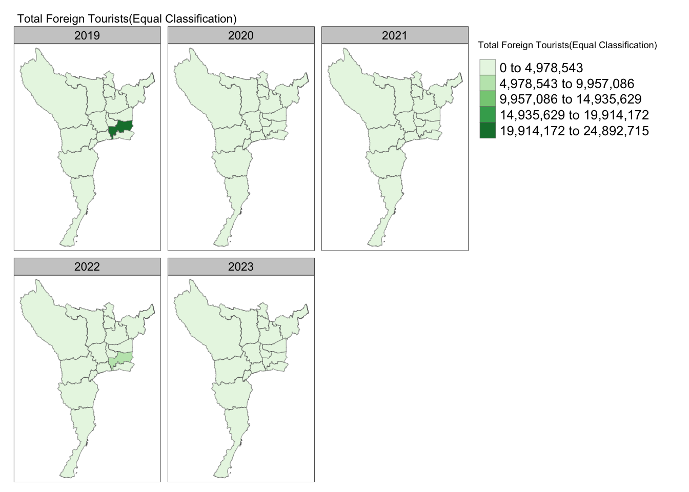
Quantile
Show the code
tmap_mode("plot")tmap mode set to plottingShow the code
tm_shape(tourist_numbers_foreign_yearly) +
tm_fill("total_value",
style = "quantile",
palette = "Greens",
title = "Total Foreign Tourists(Quantile Classification)") +
tm_borders(alpha = 0.5) +
tm_facets(by = "year") +
tm_layout(main.title = "Total Foreign Tourists(Quantile Classification)",
main.title.size = 0.7,
legend.width = 1.2,
legend.text.size = 0.8)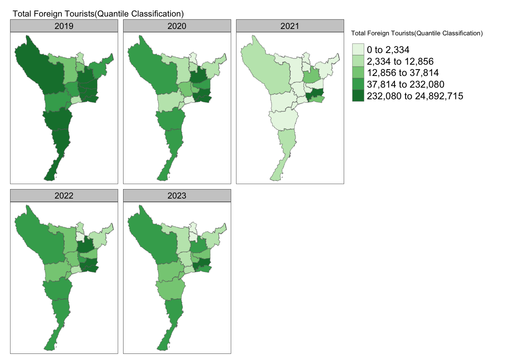
The first map shows more clearly the significant advantage of Bangkok in receiving foreign tourists in 2019, while the overall number of tourists in the following years has dropped sharply.
Through second map, it can be seen that in addition to Bangkok, other regions such as the southern region also have relatively more reception in terms of tourist inflow.
Some areas may not be obvious in the annual data, but may become important in certain months.So next we will mainly analysis numbers of tourists on the monthly aspect to find more insights.
Total Tourist Numbers (Monthly)
We aggregate by month to calculate the total number of tourists per province per month.
tourist_numbers_thai_monthly <- tourist_numbers_thai %>%
mutate(
year = year(date),
month = month(date)
) %>%
group_by(ADM1_EN, year, month) %>%
summarise(total_value = sum(value, na.rm = TRUE)) %>%
ungroup()tourist_numbers_foreign_monthly <- tourist_numbers_foreign %>%
mutate(
year = year(date),
month = month(date)
) %>%
group_by(ADM1_EN, year, month) %>%
summarise(total_value = sum(value, na.rm = TRUE)) %>%
ungroup()saveRDS(): Saves the data object as a .rds file for quick loading and use later.
readRDS(): Reads the saved data object from a .rds file to avoid recalculation or processing.
saveRDS(tourist_numbers_thai_monthly,"data/rds/tourist_numbers_thai_monthly.rds")tourist_numbers_thai_monthly <- readRDS("data/rds/tourist_numbers_thai_monthly.rds")saveRDS(tourist_numbers_foreign_monthly,"data/rds/tourist_numbers_foreign_monthly.rds")tourist_numbers_foreign_monthly <-readRDS("data/rds/tourist_numbers_foreign_monthly.rds")4.3Local tourists monthly
From the data,we notice that in 2020-2023，they were too many data unrecorded,so we choose 2019 which least unrecorded data to analysis.
tourist_numbers_2019_monthly <- tourist_numbers_thai_monthly %>%
filter(year == 2019)Equal
Show the code
tmap_mode("plot")tmap mode set to plottingShow the code
tm_shape(tourist_numbers_2019_monthly) +
tm_fill("total_value",
style = "equal",
palette = "YlOrBr",
title = "Total Local Tourists for monthly 2019(Equal Classification)") +
tm_borders(alpha = 0.5) +
tm_facets(by = "month") +
tm_layout(main.title = "Total Local Tourists for monthly 2019(Equal Classification)",
main.title.size = 0.7,
legend.width = 1.2,
legend.text.size = 0.8)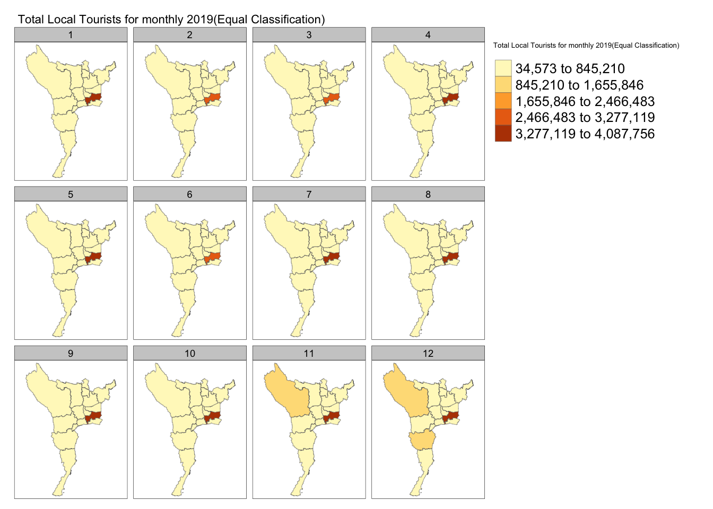
Quantile
Show the code
tmap_mode("plot")tmap mode set to plottingShow the code
tm_shape(tourist_numbers_2019_monthly) +
tm_fill("total_value",
style = "quantile",
palette = "YlOrBr",
title = "Total Local Tourists for monthly 2019 (Quantile Classification)") +
tm_borders(alpha = 0.5) +
tm_facets(by = "month") +
tm_layout(main.title = "Total Local Tourists for monthly 2019(Quantile Classification)",
main.title.size = 0.7,
legend.width = 1.2,
legend.text.size = 0.8)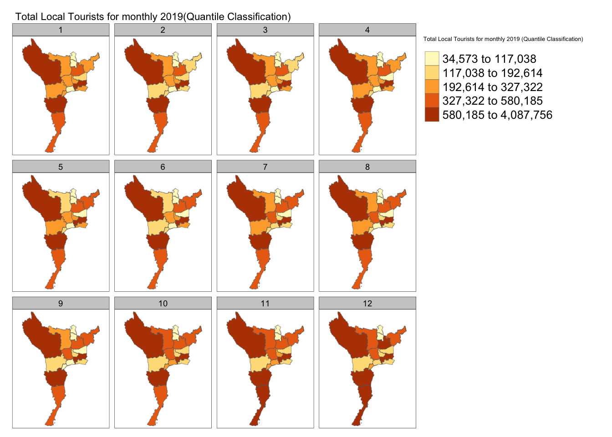
4.4Foreign tourist monthly
tourist_numbers_2019_foreign_monthly <- tourist_numbers_foreign_monthly %>%
filter(year == 2019)Equal
Show the code
tmap_mode("plot")tmap mode set to plottingShow the code
tm_shape(tourist_numbers_2019_foreign_monthly) +
tm_fill("total_value",
style = "equal",
palette = "PuRd",
title = "Total Foreign Tourists for monthly 2019(Equal Classification)") +
tm_borders(alpha = 0.5) +
tm_facets(by = "month") +
tm_layout(main.title = "Total Foreign Tourists for monthly 2019(Equal Classification)",
main.title.size = 0.7,
legend.width = 1.2,
legend.text.size = 0.8)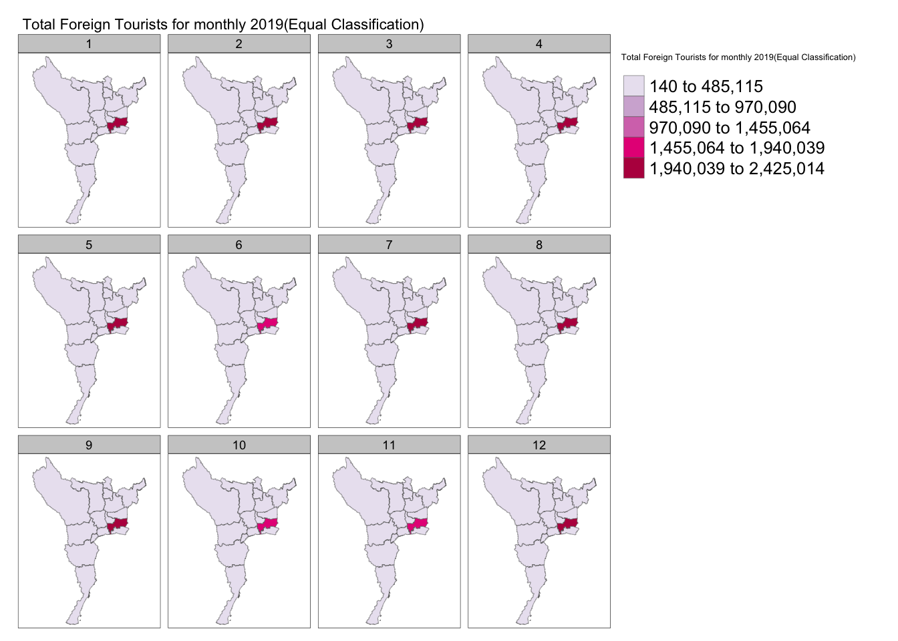
Quantile
Show the code
tmap_mode("plot")tmap mode set to plottingShow the code
tm_shape(tourist_numbers_2019_foreign_monthly) +
tm_fill("total_value",
style = "quantile",
palette = "PuRd",
title = "Total Foreign Tourists for monthly 2019 (Quantile Classification)") +
tm_borders(alpha = 0.5) +
tm_facets(by = "month") +
tm_layout(main.title = "Total Foreign Tourists for monthly 2019(Quantile Classification)",
main.title.size = 0.7,
legend.width = 1.2,
legend.text.size = 0.8)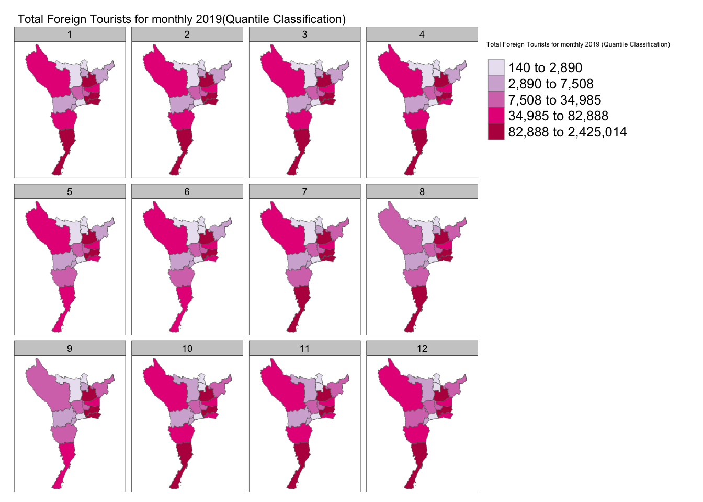
However，tourism for foreign tourists has been affected by the epidemic，especially in Bangkok at the end of the 2019.
4.5Tourist behavior
Travel restrictions and health and safety concerns during the pandemic may cause tourists to shorten their stay or even cancel their trips,on the other hand,the length of time tourists stay in a country directly affects their local consumption level, including accommodation, catering, shopping, and entertainment. If the stay rate is high, tourists’ local consumption will usually be higher, thus making a greater contribution to the local economy.
We extracted the data for the ratio indicators.
ratio_tourist_stay <- merged_data %>%
filter(variable %in% c( "ratio_tourist_stay"))We use mutate() to extract the year from the date, then use group_by() to group by province and year, and finally use summarise() to calculate the average of each group.
ratio_tourist_stay_yearly <- ratio_tourist_stay %>%
mutate(year = year(date)) %>%
group_by(ADM1_EN, year) %>%
summarise(average_ratio = mean(value, na.rm = TRUE)) %>%
ungroup()saveRDS(ratio_tourist_stay_yearly,"data/rds/ratio_tourist_stay_yearly.rds")ratio_tourist_stay_yearly <- readRDS("data/rds/ratio_tourist_stay_yearly.rds")Visualising Tourist behavior Indicator using Equal and Quantile
Equal
Show the code
tmap_mode("plot")tmap mode set to plottingShow the code
tm_shape(ratio_tourist_stay_yearly) +
tm_fill("average_ratio",
style = "equal",
palette = "GnBu",
title = "Ratio of Tourist stay (Equal)") +
tm_borders(alpha = 0.5) +
tm_facets(by = "year") +
tm_layout(main.title = "Ratio of Tourist stay (equal Classification)",
main.title.size = 0.7,
legend.width = 1.2,
legend.text.size = 0.8)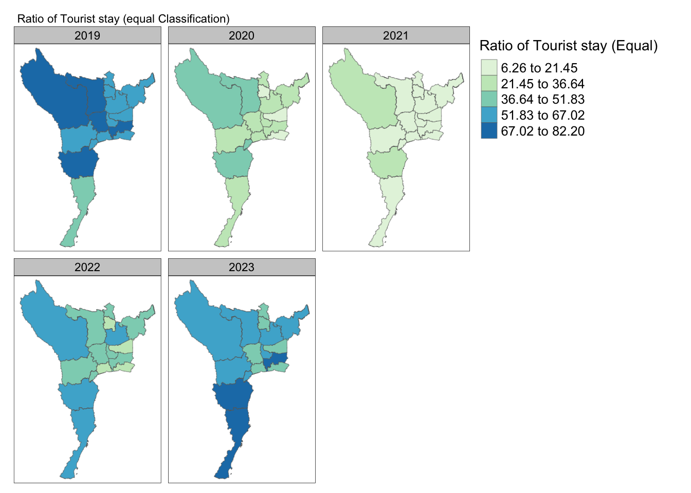
Quantile
Show the code
tmap_mode("plot")tmap mode set to plottingShow the code
tm_shape(ratio_tourist_stay_yearly) +
tm_fill("average_ratio",
style = "quantile",
palette = "GnBu",
title = "Ratio of Tourist stay (Quantile)") +
tm_borders(alpha = 0.5) +
tm_facets(by = "year") +
tm_layout(main.title = "Ratio of Tourist stay (Quantile Classification)",
main.title.size = 0.7,
legend.width = 1.2,
legend.text.size = 0.8)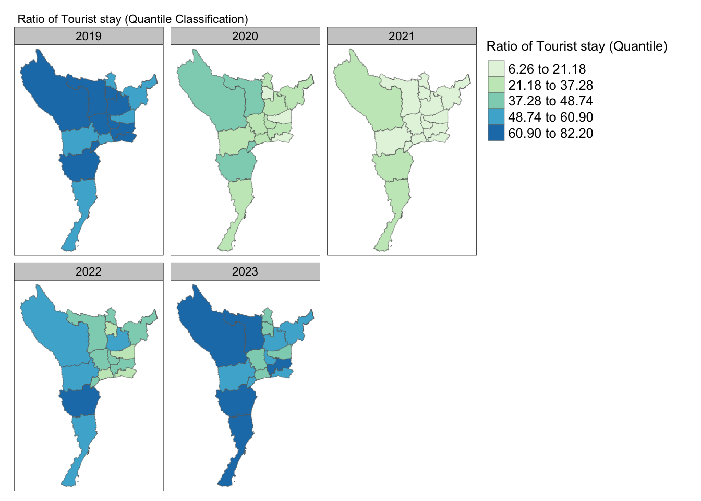
2019: Before the pandemic, many regions in Thailand had high rates of tourist stay, especially in some provinces in the central and southern parts of the country.
2020-2021: With the outbreak of COVID-19, the tourism industry has been severely affected. It can be clearly seen in the figure that the tourist stay rate in most regions in these years has dropped sharply, especially in 2021, when the stay rate in almost all regions is at the lowest level.
2022-2023: As the pandemic gradually eases, the tourism industry begins to recover. It can be seen in the figure that the tourist stay rate in some regions has gradually recovered, but it has not returned to the level of 2019.
Creating a Time Series Cube
Compare to temporal-spatial,the impact of COVID-19 on tourism in different provinces is not just static data for a certain period of time, but gradually changes in each region over time. Spacetime can help us identify these dynamic changes.
Because our data both have geometry, so we use “as_spacetime”.
Tourists yearly
tourist_numbers_thai_yearly_st <- as_spacetime(tourist_numbers_thai_yearly, "ADM1_EN", "year")tourist_numbers_foreign_yearly_st <- as_spacetime(tourist_numbers_foreign_yearly, "ADM1_EN", "year")saveRDS(tourist_numbers_thai_yearly_st,"data/rds/tourist_numbers_thai_yearly_st.rds")tourist_numbers_thai_yearly_st <- readRDS("data/rds/tourist_numbers_thai_yearly_st.rds")saveRDS(tourist_numbers_foreign_yearly_st,"data/rds/tourist_numbers_foreign_yearly_st.rds")tourist_numbers_foreign_yearly_st <- readRDS("data/rds/tourist_numbers_foreign_yearly_st.rds")Check whether convert successfully
is_spacetime_cube(tourist_numbers_thai_yearly_st)[1] TRUEis_spacetime_cube(tourist_numbers_foreign_yearly_st)[1] TRUETourists monthly
We choose 2019 to see the impact.
tourist_numbers_local_monthly2019_st <- as_spacetime(tourist_numbers_2019_monthly, "ADM1_EN", "month")saveRDS(tourist_numbers_local_monthly2019_st,"data/rds/tourist_numbers_local_monthly2019_st.rds")tourist_numbers_local_monthly2019_st <- readRDS("data/rds/tourist_numbers_local_monthly2019_st.rds")tourist_numbers_froeign_monthly2019_st <- as_spacetime(tourist_numbers_2019_foreign_monthly, "ADM1_EN", "month")saveRDS(tourist_numbers_froeign_monthly2019_st,"data/rds/tourist_numbers_froeign_monthly2019_st.rds")tourist_numbers_froeign_monthly2019_st <- readRDS("data/rds/tourist_numbers_froeign_monthly2019_st.rds")is_spacetime_cube(tourist_numbers_froeign_monthly2019_st)[1] TRUEis_spacetime_cube(tourist_numbers_local_monthly2019_st)[1] TRUETourists stay
ratio_tourist_stay_yearly_st <- as_spacetime(ratio_tourist_stay_yearly, "ADM1_EN", "year")saveRDS(ratio_tourist_stay_yearly_st,"data/rds/ratio_tourist_stay_yearly_st.rds")ratio_tourist_stay_yearly_st <- readRDS("data/rds/ratio_tourist_stay_yearly_st.rds")is_spacetime_cube(ratio_tourist_stay_yearly_st)[1] TRUEGlobal and Local Measures of Spatial Autocorrelation
Global Spatial Autocorrelation：Understand whether the data show spatial dependence or spatial correlation as a whole. If Moran’s I is significant, it means that the variable values are clustered in space rather than randomly distributed.
In this case we will use sfdep methods.
1.Global Measures of Spatial Association
Step 1: Deriving Queen’s contiguity weights: sfdep methods
Show the code
wm_q_numbers_thai_yearly <- tourist_numbers_thai_yearly %>%
mutate(nb = st_contiguity(geometry),
wt = st_weights(nb,
style = "W"),
.before = 1) saveRDS(wm_q_numbers_thai_yearly,"data/rds/wm_q_numbers_thai_yearly.rds")wm_q_numbers_thai_yearly <- readRDS("data/rds/wm_q_numbers_thai_yearly.rds")wm_q_numbers_thai_yearlySimple feature collection with 80 features and 5 fields
Geometry type: GEOMETRY
Dimension: XY
Bounding box: xmin: 98.18107 ymin: 10.95469 xmax: 101.4546 ymax: 15.66074
Geodetic CRS: WGS 84
# A tibble: 80 × 6
nb wt ADM1_EN year total_value geometry
* <nb> <list> <chr> <dbl> <dbl> <POLYGON [°]>
1 <int [19]> <dbl [19]> Ang Thong 2019 796444 ((100.3329 14.79905, 100.3…
2 <int [19]> <dbl [19]> Ang Thong 2020 369062 ((100.3329 14.79905, 100.3…
3 <int [19]> <dbl [19]> Ang Thong 2021 253957 ((100.3329 14.79905, 100.3…
4 <int [19]> <dbl [19]> Ang Thong 2022 670079 ((100.3329 14.79905, 100.3…
5 <int [19]> <dbl [19]> Ang Thong 2023 161835 ((100.3329 14.79905, 100.3…
6 <int [29]> <dbl [29]> Bangkok 2019 42073847 ((100.6128 13.9552, 100.61…
7 <int [29]> <dbl [29]> Bangkok 2020 18795401 ((100.6128 13.9552, 100.61…
8 <int [29]> <dbl [29]> Bangkok 2021 11946480 ((100.6128 13.9552, 100.61…
9 <int [29]> <dbl [29]> Bangkok 2022 28793993 ((100.6128 13.9552, 100.61…
10 <int [29]> <dbl [29]> Bangkok 2023 5290145 ((100.6128 13.9552, 100.61…
# ℹ 70 more rowsShow the code
wm_q_numbers_foreign_yearly <- tourist_numbers_foreign_yearly %>%
mutate(nb = st_contiguity(geometry),
wt = st_weights(nb,
style = "W"),
.before = 1) saveRDS(wm_q_numbers_foreign_yearly,"data/rds/wm_q_numbers_foreign_yearly.rds")wm_q_numbers_foreign_yearly <- readRDS("data/rds/wm_q_numbers_foreign_yearly.rds")wm_q_numbers_foreign_yearly Simple feature collection with 80 features and 5 fields
Geometry type: GEOMETRY
Dimension: XY
Bounding box: xmin: 98.18107 ymin: 10.95469 xmax: 101.4546 ymax: 15.66074
Geodetic CRS: WGS 84
# A tibble: 80 × 6
nb wt ADM1_EN year total_value geometry
* <nb> <list> <chr> <dbl> <dbl> <POLYGON [°]>
1 <int [19]> <dbl [19]> Ang Thong 2019 32112 ((100.3329 14.79905, 100.3…
2 <int [19]> <dbl [19]> Ang Thong 2020 8259 ((100.3329 14.79905, 100.3…
3 <int [19]> <dbl [19]> Ang Thong 2021 0 ((100.3329 14.79905, 100.3…
4 <int [19]> <dbl [19]> Ang Thong 2022 670 ((100.3329 14.79905, 100.3…
5 <int [19]> <dbl [19]> Ang Thong 2023 1032 ((100.3329 14.79905, 100.3…
6 <int [29]> <dbl [29]> Bangkok 2019 24892715 ((100.6128 13.9552, 100.61…
7 <int [29]> <dbl [29]> Bangkok 2020 4822513 ((100.6128 13.9552, 100.61…
8 <int [29]> <dbl [29]> Bangkok 2021 625362 ((100.6128 13.9552, 100.61…
9 <int [29]> <dbl [29]> Bangkok 2022 9832457 ((100.6128 13.9552, 100.61…
10 <int [29]> <dbl [29]> Bangkok 2023 4279587 ((100.6128 13.9552, 100.61…
# ℹ 70 more rowsShow the code
wm_q_numbers_local_monthly2019 <- tourist_numbers_2019_monthly %>%
mutate(nb = st_contiguity(geometry),
wt = st_weights(nb,
style = "W"),
.before = 1) saveRDS(wm_q_numbers_local_monthly2019,"data/rds/wm_q_numbers_monthly2019.rds")wm_q_numbers_local_monthly2019 <- readRDS("data/rds/wm_q_numbers_monthly2019.rds")wm_q_numbers_local_monthly2019 Simple feature collection with 192 features and 6 fields
Geometry type: GEOMETRY
Dimension: XY
Bounding box: xmin: 98.18107 ymin: 10.95469 xmax: 101.4546 ymax: 15.66074
Geodetic CRS: WGS 84
# A tibble: 192 × 7
nb wt ADM1_EN year month total_value geometry
* <nb> <list> <chr> <dbl> <dbl> <dbl> <POLYGON [°]>
1 <int [47]> <dbl> Ang Thong 2019 1 98816 ((100.3329 14.79905, 100…
2 <int [47]> <dbl> Ang Thong 2019 2 90029 ((100.3329 14.79905, 100…
3 <int [47]> <dbl> Ang Thong 2019 3 96733 ((100.3329 14.79905, 100…
4 <int [47]> <dbl> Ang Thong 2019 4 61929 ((100.3329 14.79905, 100…
5 <int [47]> <dbl> Ang Thong 2019 5 69159 ((100.3329 14.79905, 100…
6 <int [47]> <dbl> Ang Thong 2019 6 62095 ((100.3329 14.79905, 100…
7 <int [47]> <dbl> Ang Thong 2019 7 60045 ((100.3329 14.79905, 100…
8 <int [47]> <dbl> Ang Thong 2019 8 51666 ((100.3329 14.79905, 100…
9 <int [47]> <dbl> Ang Thong 2019 9 57042 ((100.3329 14.79905, 100…
10 <int [47]> <dbl> Ang Thong 2019 10 53523 ((100.3329 14.79905, 100…
# ℹ 182 more rowsShow the code
wm_q_numbers_foreign_monthly2019 <- tourist_numbers_2019_foreign_monthly %>%
mutate(nb = st_contiguity(geometry),
wt = st_weights(nb,
style = "W"),
.before = 1) saveRDS(wm_q_numbers_foreign_monthly2019,"data/rds/wm_q_numbers_foreign_monthly2019.rds")wm_q_numbers_foreign_monthly2019<-readRDS("data/rds/wm_q_numbers_foreign_monthly2019.rds")wm_q_numbers_foreign_monthly2019Simple feature collection with 192 features and 6 fields
Geometry type: GEOMETRY
Dimension: XY
Bounding box: xmin: 98.18107 ymin: 10.95469 xmax: 101.4546 ymax: 15.66074
Geodetic CRS: WGS 84
# A tibble: 192 × 7
nb wt ADM1_EN year month total_value geometry
* <nb> <list> <chr> <dbl> <dbl> <dbl> <POLYGON [°]>
1 <int [47]> <dbl> Ang Thong 2019 1 5281 ((100.3329 14.79905, 100…
2 <int [47]> <dbl> Ang Thong 2019 2 3915 ((100.3329 14.79905, 100…
3 <int [47]> <dbl> Ang Thong 2019 3 4690 ((100.3329 14.79905, 100…
4 <int [47]> <dbl> Ang Thong 2019 4 899 ((100.3329 14.79905, 100…
5 <int [47]> <dbl> Ang Thong 2019 5 764 ((100.3329 14.79905, 100…
6 <int [47]> <dbl> Ang Thong 2019 6 1022 ((100.3329 14.79905, 100…
7 <int [47]> <dbl> Ang Thong 2019 7 5989 ((100.3329 14.79905, 100…
8 <int [47]> <dbl> Ang Thong 2019 8 2938 ((100.3329 14.79905, 100…
9 <int [47]> <dbl> Ang Thong 2019 9 3390 ((100.3329 14.79905, 100…
10 <int [47]> <dbl> Ang Thong 2019 10 1200 ((100.3329 14.79905, 100…
# ℹ 182 more rowsTourists stay yearly
Show the code
wm_q_ratio_tourist_stay_yearly <- ratio_tourist_stay_yearly %>%
mutate(nb = st_contiguity(geometry),
wt = st_weights(nb,
style = "W"),
.before = 1) saveRDS(wm_q_ratio_tourist_stay_yearly,"data/rds/wm_q_ratio_tourist_stay_yearly.rds")wm_q_ratio_tourist_stay_yearly<-readRDS("data/rds/wm_q_ratio_tourist_stay_yearly.rds")wm_q_ratio_tourist_stay_yearly Simple feature collection with 80 features and 5 fields
Geometry type: GEOMETRY
Dimension: XY
Bounding box: xmin: 98.18107 ymin: 10.95469 xmax: 101.4546 ymax: 15.66074
Geodetic CRS: WGS 84
# A tibble: 80 × 6
nb wt ADM1_EN year average_ratio geometry
* <nb> <list> <chr> <dbl> <dbl> <POLYGON [°]>
1 <int [19]> <dbl [19]> Ang Thong 2019 64.0 ((100.3329 14.79905, 100…
2 <int [19]> <dbl [19]> Ang Thong 2020 20.4 ((100.3329 14.79905, 100…
3 <int [19]> <dbl [19]> Ang Thong 2021 11.8 ((100.3329 14.79905, 100…
4 <int [19]> <dbl [19]> Ang Thong 2022 31.2 ((100.3329 14.79905, 100…
5 <int [19]> <dbl [19]> Ang Thong 2023 46.6 ((100.3329 14.79905, 100…
6 <int [29]> <dbl [29]> Bangkok 2019 82.2 ((100.6128 13.9552, 100.…
7 <int [29]> <dbl [29]> Bangkok 2020 28.2 ((100.6128 13.9552, 100.…
8 <int [29]> <dbl [29]> Bangkok 2021 13.0 ((100.6128 13.9552, 100.…
9 <int [29]> <dbl [29]> Bangkok 2022 46.6 ((100.6128 13.9552, 100.…
10 <int [29]> <dbl [29]> Bangkok 2023 75.5 ((100.6128 13.9552, 100.…
# ℹ 70 more rows2.Computing Global Moran’ I
Show the code
moranI_numbers_thai_yearly <- global_moran(wm_q_numbers_thai_yearly$total_value,
wm_q_numbers_thai_yearly$nb,
wm_q_numbers_thai_yearly$wt)
glimpse(moranI_numbers_thai_yearly)List of 2
$ I: num -0.042
$ K: num 23.7According to the result: I = -0.042 indicates that the spatial autocorrelation is very weak and close to zero, suggesting that the values between adjacent areas are almost randomly distributed.
K = 23.7 indicates that the data distribution has a very steep peak, which means that most of the data is concentrated in a certain range and there are few discrete values.
Show the code
moranI_numbers_foreign_yearly <- global_moran(wm_q_numbers_foreign_yearly $total_value,
wm_q_numbers_foreign_yearly $nb,
wm_q_numbers_foreign_yearly $wt)
glimpse(moranI_numbers_foreign_yearly)List of 2
$ I: num 0.0152
$ K: num 52.7According to the result: I = -0.0152 indicates that the spatial autocorrelation is very weak and close to zero, suggesting that the values between adjacent areas are almost randomly distributed.
K = 52.7 indicates that the data distribution has a very steep peak, which means that most of the data is concentrated in a certain range and there are few discrete values.
Show the code
moranI_numbers_thai_monthly <- global_moran(wm_q_numbers_local_monthly2019$total_value,wm_q_numbers_local_monthly2019$nb, wm_q_numbers_local_monthly2019$wt)
glimpse(moranI_numbers_thai_monthly)List of 2
$ I: num 0.00825
$ K: num 12.9From the resutl: I = 0.00825 indicates that there is a slight positive spatial autocorrelation and there may be some similarity between adjacent areas.
K = 12.9 indicates that the data distribution is highly concentrated, concentrated in a narrow interval, with a very steep peak.
Show the code
moranI_numbers_foreign_monthly <- global_moran(wm_q_numbers_foreign_monthly2019$total_value, wm_q_numbers_foreign_monthly2019$nb,
wm_q_numbers_foreign_monthly2019$wt)
glimpse(moranI_numbers_foreign_monthly)List of 2
$ I: num 0.0803
$ K: num 14.9From the resutl: I = 0.0803 indicates that there is a slight positive spatial autocorrelation and there may be some similarity between adjacent areas.
K = 14.9 indicates that the data distribution is highly concentrated, concentrated in a narrow interval, with a very steep peak.
Tourists stay yearly
Show the code
moranI_tourist_stay <- global_moran(wm_q_ratio_tourist_stay_yearly$average_ratio,
wm_q_ratio_tourist_stay_yearly$nb,
wm_q_ratio_tourist_stay_yearly $wt)
glimpse(moranI_tourist_stay)List of 2
$ I: num -0.0227
$ K: num 1.95I = -0.0227: Indicates almost no spatial autocorrelation, or even slight negative spatial autocorrelation. There may be no obvious association or similarity between values in adjacent areas. K = 1.95: Indicates that the data distribution is relatively flat, the data is more scattered, and there are more discrete values or outliers.
3.Performing Global Moran’sI test
global_moran_test(wm_q_numbers_thai_yearly$total_value,
wm_q_numbers_thai_yearly$nb,
wm_q_numbers_thai_yearly$wt)
Moran I test under randomisation
data: x
weights: listw
Moran I statistic standard deviate = -1.1207, p-value = 0.8688
alternative hypothesis: greater
sample estimates:
Moran I statistic Expectation Variance
-0.041986875 -0.012658228 0.000684876 global_moran_test(wm_q_numbers_foreign_yearly$total_value,
wm_q_numbers_foreign_yearly$nb,
wm_q_numbers_foreign_yearly$wt)
Moran I test under randomisation
data: x
weights: listw
Moran I statistic standard deviate = 1.5378, p-value = 0.06205
alternative hypothesis: greater
sample estimates:
Moran I statistic Expectation Variance
0.0151741493 -0.0126582278 0.0003275636 global_moran_test(wm_q_numbers_local_monthly2019$total_value,
wm_q_numbers_local_monthly2019$nb,
wm_q_numbers_local_monthly2019$wt)
Moran I test under randomisation
data: x
weights: listw
Moran I statistic standard deviate = 1.1047, p-value = 0.1346
alternative hypothesis: greater
sample estimates:
Moran I statistic Expectation Variance
0.0082504995 -0.0052356021 0.0001490398 global_moran_test(wm_q_numbers_foreign_monthly2019$total_value,
wm_q_numbers_foreign_monthly2019$nb,
wm_q_numbers_foreign_monthly2019$wt)
Moran I test under randomisation
data: x
weights: listw
Moran I statistic standard deviate = 7.0478, p-value = 9.09e-13
alternative hypothesis: greater
sample estimates:
Moran I statistic Expectation Variance
0.0803207165 -0.0052356021 0.0001473666 global_moran_test(wm_q_ratio_tourist_stay_yearly$average_ratio,
wm_q_ratio_tourist_stay_yearly$nb,
wm_q_ratio_tourist_stay_yearly$wt)
Moran I test under randomisation
data: x
weights: listw
Moran I statistic standard deviate = -0.32533, p-value = 0.6275
alternative hypothesis: greater
sample estimates:
Moran I statistic Expectation Variance
-0.022706373 -0.012658228 0.000953943 The data of foreign tourists show significant spatial clustering in certain time frames (such as monthly data), while the spatial distribution of local tourists and stay rates do not show obvious clustering.
4.Performing Global Moran’I permutation test
This is to ensure that the computation is reproducible.
Next, global_moran_perm() is used to perform Monte Carlo simulation.
set.seed(1234)
global_moran_perm_local_y=global_moran_perm(wm_q_numbers_thai_yearly$total_value,
wm_q_numbers_thai_yearly$nb,
wm_q_numbers_thai_yearly$wt,
nsim = 999)
global_moran_perm_local_y
Monte-Carlo simulation of Moran I
data: x
weights: listw
number of simulations + 1: 1000
statistic = -0.041987, observed rank = 99, p-value = 0.198
alternative hypothesis: two.sidedset.seed(1234)
global_moran_perm_foreign_y=global_moran_perm(wm_q_numbers_foreign_yearly$total_value,
wm_q_numbers_foreign_yearly$nb,
wm_q_numbers_foreign_yearly$wt,
nsim = 99)
global_moran_perm_foreign_y
Monte-Carlo simulation of Moran I
data: x
weights: listw
number of simulations + 1: 100
statistic = 0.015174, observed rank = 88, p-value = 0.24
alternative hypothesis: two.sidedset.seed(1234)
global_moran_perm_local_m=global_moran_perm(wm_q_numbers_local_monthly2019$total_value,
wm_q_numbers_local_monthly2019$nb,
wm_q_numbers_local_monthly2019$wt,
nsim = 999)
global_moran_perm_local_m
Monte-Carlo simulation of Moran I
data: x
weights: listw
number of simulations + 1: 1000
statistic = 0.0082505, observed rank = 874, p-value = 0.252
alternative hypothesis: two.sidedset.seed(1234)
global_moran_perm_foreign_m=global_moran_perm(wm_q_numbers_foreign_monthly2019$total_value,wm_q_numbers_foreign_monthly2019$nb,wm_q_numbers_foreign_monthly2019$wt,
nsim = 999)
global_moran_perm_foreign_m
Monte-Carlo simulation of Moran I
data: x
weights: listw
number of simulations + 1: 1000
statistic = 0.080321, observed rank = 1000, p-value < 2.2e-16
alternative hypothesis: two.sidedhist(global_moran_perm_foreign_m$res,
freq=TRUE,
breaks=20,
xlab="Simulated Moran's I of Annual number of foreign tourists monthly")
abline(v=0,
col="red") 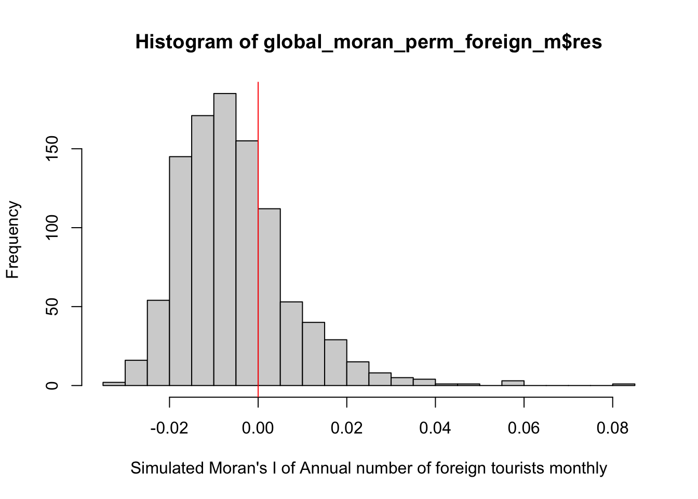
set.seed(1234)
global_moran_perm_stay_y=global_moran_perm(wm_q_ratio_tourist_stay_yearly$average_ratio,
wm_q_ratio_tourist_stay_yearly$nb,
wm_q_ratio_tourist_stay_yearly$wt,
nsim = 999)
global_moran_perm_stay_y
Monte-Carlo simulation of Moran I
data: x
weights: listw
number of simulations + 1: 1000
statistic = -0.022706, observed rank = 444, p-value = 0.888
alternative hypothesis: two.sidedMoran’s I Monte Carlo simulation of monthly foreign visitor data in 2019 shows significant spatial autocorrelation:
The simulated Moran’s I value is 0.0803 and the p-value is less than 2.2e-16, which means that the spatial autocorrelation in the data is very significant.
The histogram shows the distribution of the Moran’s I statistic generated by the simulation. Most of the simulated values are close to 0, but the actual observed statistic is around 0.08, which shows that the distribution of foreign tourist data has significant positive spatial autocorrelation. That is, adjacent areas have similar numbers of tourists, and tourists may be concentrated in certain areas.
However, for the other indicators such as annual numbers of tourist and stay are not significant,which means these indicators are randomly distributed in various province.
Local spatial autocorrelation analysis
Although global analysis can tell us the overall spatial clustering of the data, it cannot point out which specific areas have clustering or anomalies. Local autocorrelation analysis can identify these specific hot spots or cold spots and provide more targeted regional analysis.
Therefore we will continue our local spatial autocorrelation analysis.
1.Computing local Moran’s I
ii (Local Moran’s I statistic): It reflects the spatial autocorrelation between each spatial unit and its surrounding units. Specifically, a positive ii value indicates that the spatial unit has similar values to its neighboring units (high-high or low-low clustering), while a negative ii value indicates that it has different values from its neighboring units (high-low or low-high inversion).
p_ii_sim: This is the p value associated with the ii value, reflecting the statistical significance calculated by simulation. It is calculated by Monte Carlo method or other randomization tests. If the p_ii_sim value is small (such as < 0.05), it means that the spatial autocorrelation of the spatial unit is statistically significant, and the spatial clustering or inversion is not generated randomly, but there is a certain structure or pattern.
lisa_numbers_thai_yearly <- wm_q_numbers_thai_yearly %>%
mutate(local_moran = local_moran(
total_value, nb, wt, nsim = 99),
.before = 1) %>%
unnest(local_moran)Visualising local Moran’s I
tmap_mode("plot")tmap mode set to plottingmap1 <- tm_shape(lisa_numbers_thai_yearly) +
tm_fill("ii",
style = "pretty",
palette = "RdBu",
title = "local Moran's I statistics" ) +
tm_borders(alpha = 0.5) +
tm_view(set.zoom.limits = c(6,8)) +
tm_layout(
main.title = "local Moran's I of Annual number of local tourists",
main.title.size = 0.7)
map2 <- tm_shape(lisa_numbers_thai_yearly) +
tm_fill("p_ii_sim",
breaks = c(-Inf, 0.001, 0.01, 0.05, 0.1, Inf),
palette = "-Blues" ) +
tm_borders(alpha = 0.5) +
tm_layout(main.title = "p-value of local Moran's I of Annual number of local tourists ",
main.title.size = 0.7)
tmap_arrange(map1, map2, ncol = 2)Variable(s) "ii" contains positive and negative values, so midpoint is set to 0. Set midpoint = NA to show the full spectrum of the color palette.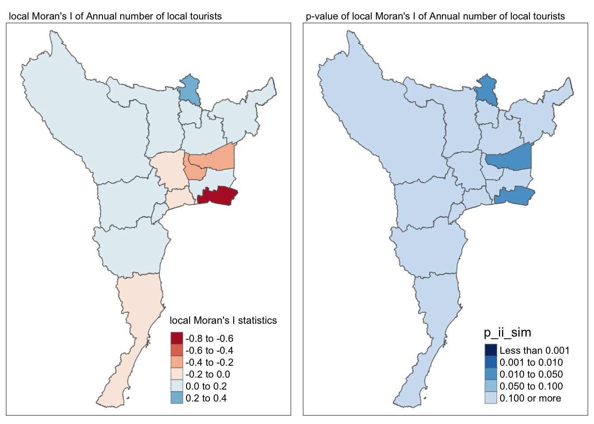
The dark red area indicates that the local Moran’s index is negative, indicating that the number of tourists in the area is low and the number of tourists in the surrounding areas is high, showing a low-high spatial pattern. The red area shows strong spatial differences, especially the area south of Bangkok.
Light blue areas indicate that the local Moran index is positive, indicating that the number of tourists in this area is large, and the number of tourists in the surrounding areas is also large, forming a high-high spatial pattern. This pattern may indicate that these areas are relatively attractive to tourists, especially in central and northern Thailand.
Most light gray areas indicate that the number of tourists in these areas has no obvious spatial autocorrelation with the surrounding areas, and the number of tourists is relatively evenly distributed.
Some regions in Thailand show a strong spatial agglomeration effect of tourist arrivals (such as the blue areas in the central and northern parts), while tourist arrivals in other regions are relatively dispersed or have little connection with surrounding areas.
lisa_numbers_foreign_yearly <- wm_q_numbers_foreign_yearly %>%
mutate(local_moran = local_moran(
total_value, nb, wt, nsim = 99),
.before = 1) %>%
unnest(local_moran)
lisa_numbers_foreign_yearlySimple feature collection with 80 features and 17 fields
Geometry type: GEOMETRY
Dimension: XY
Bounding box: xmin: 98.18107 ymin: 10.95469 xmax: 101.4546 ymax: 15.66074
Geodetic CRS: WGS 84
# A tibble: 80 × 18
ii eii var_ii z_ii p_ii p_ii_sim p_folded_sim skewness
<dbl> <dbl> <dbl> <dbl> <dbl> <dbl> <dbl> <dbl>
1 0.0371 -0.00310 0.00237 0.825 0.409 0.42 0.21 -1.03
2 0.0383 -0.00207 0.00317 0.718 0.473 0.54 0.27 -1.68
3 0.0388 -0.00302 0.00236 0.860 0.390 0.52 0.26 -0.845
4 0.0387 0.00901 0.00199 0.667 0.504 0.58 0.29 -1.81
5 0.0387 -0.00218 0.00305 0.741 0.459 0.5 0.25 -1.73
6 0.304 -0.746 0.455 1.56 0.119 0.16 0.08 0.860
7 0.366 0.00216 0.0705 1.37 0.171 0.24 0.12 1.21
8 -0.00584 0.000774 0.0000110 -1.99 0.0466 0.14 0.07 -1.65
9 0.635 -0.181 0.229 1.70 0.0885 0.12 0.06 1.28
10 0.325 -0.00717 0.0594 1.36 0.173 0.16 0.08 1.11
# ℹ 70 more rows
# ℹ 10 more variables: kurtosis <dbl>, mean <fct>, median <fct>, pysal <fct>,
# nb <nb>, wt <list>, ADM1_EN <chr>, year <dbl>, total_value <dbl>,
# geometry <POLYGON [°]>Visualising local Moran’s I
tmap_mode("plot")tmap mode set to plottingmap3 <- tm_shape(lisa_numbers_foreign_yearly) +
tm_fill("ii",
style = "pretty",
palette = "RdBu",
title = "local Moran's I statistics") +
tm_borders(alpha = 0.5) +
tm_view(set.zoom.limits = c(6,8)) +
tm_layout(
main.title = "local Moran's I of Annual number of foreign tourists",
main.title.size = 0.7)
map4 <- tm_shape(lisa_numbers_foreign_yearly) +
tm_fill("p_ii_sim",
breaks = c(-Inf, 0.001, 0.01, 0.05, 0.1, Inf),
palette = "-Blues" ) +
tm_borders(alpha = 0.5) +
tm_layout(main.title = "p-value of local Moran's I of Annual number of foreign tourists ",
main.title.size = 0.7)
tmap_arrange(map3, map4, ncol = 2)Variable(s) "ii" contains positive and negative values, so midpoint is set to 0. Set midpoint = NA to show the full spectrum of the color palette.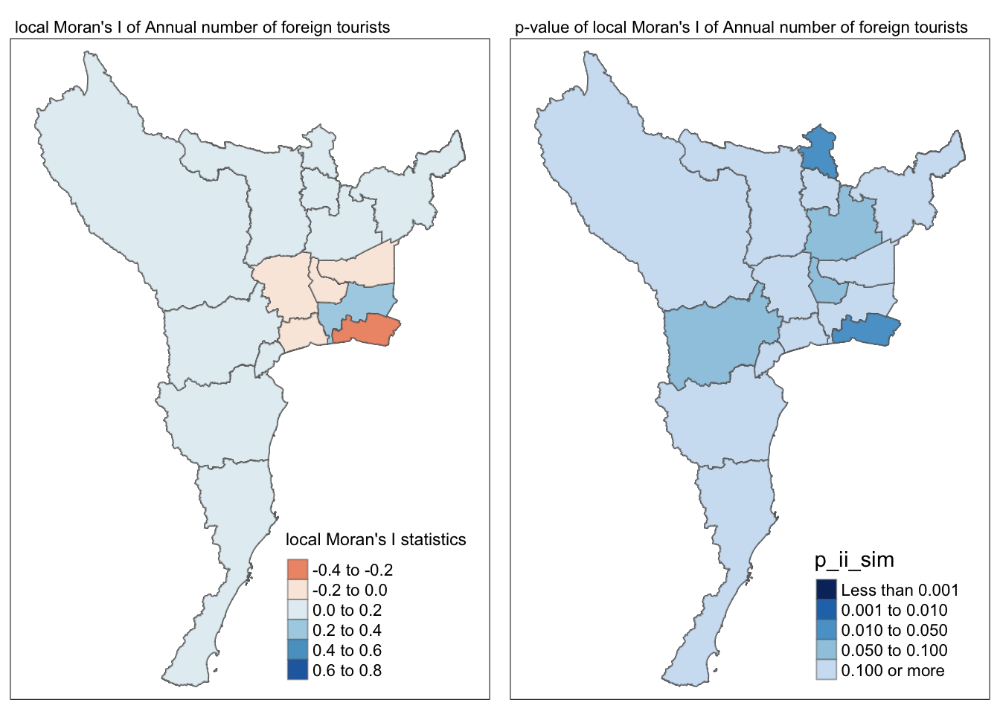
Light orange and light red areas indicate local negative Moran’s index values. These areas may have a low-high spatial pattern, suggesting that these areas have fewer tourists, but their neighboring areas have more tourists.
The tourism pattern of some areas (such as the dark blue area) has a strong spatial agglomeration effect
lisa_numbers_thai_monthly <- wm_q_numbers_local_monthly2019 %>%
mutate(local_moran = local_moran(
total_value, nb, wt, nsim = 99),
.before = 1) %>%
unnest(local_moran)
lisa_numbers_thai_monthlySimple feature collection with 192 features and 18 fields
Geometry type: GEOMETRY
Dimension: XY
Bounding box: xmin: 98.18107 ymin: 10.95469 xmax: 101.4546 ymax: 15.66074
Geodetic CRS: WGS 84
# A tibble: 192 × 19
ii eii var_ii z_ii p_ii p_ii_sim p_folded_sim skewness kurtosis
<dbl> <dbl> <dbl> <dbl> <dbl> <dbl> <dbl> <dbl> <dbl>
1 0.171 -0.0213 0.00646 2.39 0.0168 0.02 0.01 -0.317 -0.185
2 0.175 0.00809 0.00586 2.17 0.0297 0.02 0.01 -0.686 0.333
3 0.172 0.000403 0.00450 2.56 0.0106 0.02 0.01 -0.335 0.313
4 0.186 -0.00134 0.00549 2.53 0.0115 0.02 0.01 -0.506 -0.381
5 0.183 -0.0109 0.00682 2.35 0.0189 0.02 0.01 -0.368 -0.104
6 0.186 -0.0118 0.00703 2.36 0.0184 0.02 0.01 -0.208 -0.187
7 0.187 -0.00314 0.00791 2.13 0.0328 0.02 0.01 -0.448 -0.104
8 0.190 0.00561 0.00657 2.28 0.0229 0.02 0.01 -0.124 -0.836
9 0.188 -0.0148 0.00762 2.32 0.0202 0.02 0.01 -0.470 0.179
10 0.189 0.00326 0.00787 2.10 0.0360 0.02 0.01 -0.658 0.655
# ℹ 182 more rows
# ℹ 10 more variables: mean <fct>, median <fct>, pysal <fct>, nb <nb>,
# wt <list>, ADM1_EN <chr>, year <dbl>, month <dbl>, total_value <dbl>,
# geometry <POLYGON [°]>Visualising local Moran’s I
tmap_mode("plot")tmap mode set to plottingmap5 <- tm_shape(lisa_numbers_thai_monthly) +
tm_fill("ii",
style = "pretty",
palette = "RdBu",
title = "local Moran's I statistics") +
tm_borders(alpha = 0.5) +
tm_view(set.zoom.limits = c(6,8)) +
tm_layout(
main.title = "local Moran's I of Monthly number of local tourists",
main.title.size = 0.7)
map6 <- tm_shape(lisa_numbers_thai_monthly) +
tm_fill("p_ii_sim",
breaks = c(-Inf, 0.001, 0.01, 0.05, 0.1, Inf),
palette = "-Blues") +
tm_borders(alpha = 0.5) +
tm_layout(main.title = "p-value of local Moran's I of Monthly number of local tourists ",
main.title.size = 0.7)
tmap_arrange(map5, map6, ncol = 2)Variable(s) "ii" contains positive and negative values, so midpoint is set to 0. Set midpoint = NA to show the full spectrum of the color palette.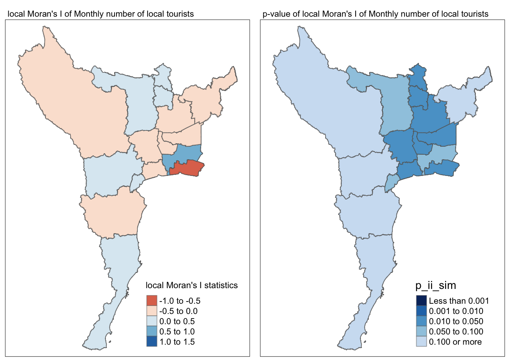
The dark blue areas in the figure indicate high-high agglomeration effects, which may mean that these areas stand out in terms of the number of tourists, etc., while the red areas may be low-high patterns, indicating that these areas do not have the same characteristics as neighboring areas.
lisa_numbers_foreign_monthly <- wm_q_numbers_foreign_monthly2019 %>%
mutate(local_moran = local_moran(
total_value, nb, wt, nsim = 99),
.before = 1) %>%
unnest(local_moran)
lisa_numbers_foreign_monthlySimple feature collection with 192 features and 18 fields
Geometry type: GEOMETRY
Dimension: XY
Bounding box: xmin: 98.18107 ymin: 10.95469 xmax: 101.4546 ymax: 15.66074
Geodetic CRS: WGS 84
# A tibble: 192 × 19
ii eii var_ii z_ii p_ii p_ii_sim p_folded_sim skewness kurtosis
<dbl> <dbl> <dbl> <dbl> <dbl> <dbl> <dbl> <dbl> <dbl>
1 0.0765 -0.00442 0.00256 1.60 0.110 0.06 0.03 -0.574 -0.0513
2 0.0772 -0.00175 0.00192 1.80 0.0716 0.04 0.02 -0.519 -0.153
3 0.0768 0.000772 0.00208 1.67 0.0956 0.14 0.07 -0.279 -0.453
4 0.0786 -0.00372 0.00259 1.62 0.106 0.08 0.04 -0.475 -0.0874
5 0.0786 -0.000677 0.00324 1.39 0.164 0.18 0.09 -0.490 -0.0297
6 0.0785 0.00367 0.00197 1.68 0.0921 0.02 0.01 -0.821 0.605
7 0.0762 0.00222 0.00227 1.55 0.120 0.12 0.06 -0.333 -0.690
8 0.0776 0.000580 0.00196 1.74 0.0822 0.08 0.04 -0.288 -0.323
9 0.0774 -0.000973 0.00186 1.82 0.0689 0.1 0.05 -0.0473 -0.519
10 0.0784 0.00859 0.00185 1.62 0.104 0.12 0.06 -0.558 0.337
# ℹ 182 more rows
# ℹ 10 more variables: mean <fct>, median <fct>, pysal <fct>, nb <nb>,
# wt <list>, ADM1_EN <chr>, year <dbl>, month <dbl>, total_value <dbl>,
# geometry <POLYGON [°]>Visualising local Moran’s I
tmap_mode("plot")tmap mode set to plottingmap3 <- tm_shape(lisa_numbers_foreign_monthly) +
tm_fill("ii",
style = "pretty",
palette = "RdBu",
title = "local Moran's I statistics") +
tm_borders(alpha = 0.5) +
tm_view(set.zoom.limits = c(6,8)) +
tm_layout(
main.title = "local Moran's I of Monthly number of foreign tourists",
main.title.size = 0.7)
map4 <- tm_shape(lisa_numbers_thai_monthly) +
tm_fill("p_ii_sim",
breaks = c(-Inf, 0.001, 0.01, 0.05, 0.1, Inf),
palette = "-Blues") +
tm_borders(alpha = 0.5) +
tm_layout(main.title = "p-value of local Moran's I of Monthly number of foreign tourists ",
main.title.size = 0.7)
tmap_arrange(map3, map4, ncol = 2)Variable(s) "ii" contains positive and negative values, so midpoint is set to 0. Set midpoint = NA to show the full spectrum of the color palette.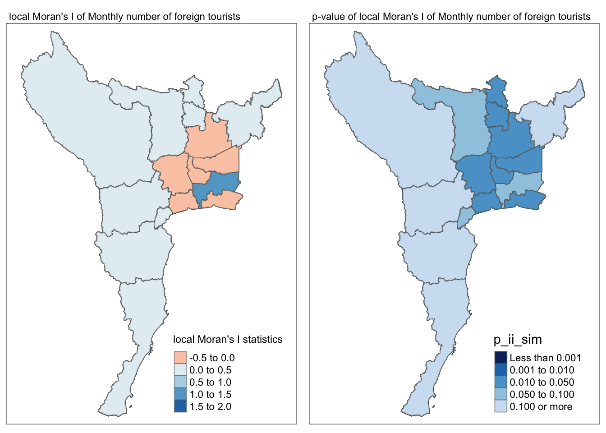
The distribution of local tourists in 2019 showed a certain degree of spatial autocorrelation, with some areas (such as the light orange color area) showing a sparse number of tourists and a concentration in the surrounding areas.
The spatial autocorrelation of foreign tourists was more significant, especially in the central region, where foreign tourists were concentrated, while other areas were sparsely distributed, showing a strong spatial agglomeration effect.
Here we are using the spdep package for additional Local spatial autocorrelation analysis
december_data <- tourist_numbers_2019_foreign_monthly %>%
filter(month == 12)wm_q <- poly2nb(december_data,
queen=TRUE)saveRDS(wm_q,"data/rds/wm_q.rds")wm_q <- readRDS("data/rds/wm_q.rds")summary(wm_q)Neighbour list object:
Number of regions: 16
Number of nonzero links: 58
Percentage nonzero weights: 22.65625
Average number of links: 3.625
Link number distribution:
1 2 3 4 5 6 7
2 2 4 3 3 1 1
2 least connected regions:
9 11 with 1 link
1 most connected region:
4 with 7 linksOn average, each region has 54.5 neighbors, but some regions have fewer connections (e.g., only 12 neighbors) and others have more connections (e.g., 95 neighbors).
10464 non-zero connections indicate that most regions are neighbors (28.38542% of possible region pairs)
The spatial neighbor relationship is converted into a standardized spatial weight matrix in order to prepare for the subsequent spatial autocorrelation analysis.
rswm_q <- nb2listw(wm_q,
style="W",
zero.policy = TRUE)
rswm_qCharacteristics of weights list object:
Neighbour list object:
Number of regions: 16
Number of nonzero links: 58
Percentage nonzero weights: 22.65625
Average number of links: 3.625
Weights style: W
Weights constants summary:
n nn S0 S1 S2
W 16 256 16 10.39167 68.28294This code uses the local Moran’s I method to analyze the local spatial autocorrelation of each region in the december_data dataset. By observing the Z-score and p-value in the results, we can determine which regions are spatially significantly correlated with their neighbors. This can help identify spatial clusters or discrete areas.
fips <- order(december_data$ADM1_EN)
localMI <- localmoran(december_data$total_value, rswm_q)
head(localMI) Ii E.Ii Var.Ii Z.Ii Pr(z != E(Ii))
1 0.07125353 -0.007368153 0.033434805 0.4299748 0.66721401
2 -1.07176832 -0.990483093 0.021545910 -0.5537697 0.57973645
3 0.07971451 -0.004133874 0.018819588 0.6112089 0.54106130
4 -0.10611081 -0.006677720 0.008663677 -1.0682670 0.28540011
5 -0.24855223 -0.005995100 0.018728784 -1.7723898 0.07632987
6 -0.19754957 -0.003888768 0.012174313 -1.7551713 0.07923002december_data.localMI <- cbind(december_data,localMI) %>%
rename(Pr.Ii = Pr.z....E.Ii..)december_data.localMI <- cbind(december_data,localMI) %>%
rename(Pr.Ii = Pr.z....E.Ii..)List the content of the local Moran matrix
printCoefmat(data.frame(
localMI[fips,],
row.names=december_data$ADM1_EN[fips]),
check.names=FALSE) Ii E.Ii Var.Ii Z.Ii
Ang Thong 7.1254e-02 -7.3682e-03 3.3435e-02 4.2997e-01
Bangkok -1.0718e+00 -9.9048e-01 2.1546e-02 -5.5377e-01
Kanchanaburi 7.9715e-02 -4.1339e-03 1.8820e-02 6.1121e-01
Nakhon Pathom -1.0611e-01 -6.6777e-03 8.6637e-03 -1.0683e+00
Nonthaburi -2.4855e-01 -5.9951e-03 1.8729e-02 -1.7724e+00
Pathum Thani -1.9755e-01 -3.8888e-03 1.2174e-02 -1.7552e+00
Phetchaburi 5.3820e-02 -3.4386e-03 1.5665e-02 4.5748e-01
Phra Nakhon Si Ayutthaya -5.7268e-03 -2.3771e-05 4.0749e-05 -8.9340e-01
Prachuap Khiri Khan 1.6534e-02 -3.5333e-04 5.6513e-03 2.2464e-01
Ratchaburi 9.1602e-02 -6.6681e-03 1.5140e-02 7.9866e-01
Samut Prakan -7.6581e-01 -2.6316e-03 4.1994e-02 -3.7242e+00
Samut Sakhon -2.4193e-01 -7.4242e-03 2.3160e-02 -1.5409e+00
Samut Songkhram 9.4104e-02 -6.9070e-03 3.1357e-02 5.7043e-01
Saraburi 3.3588e-02 -6.0695e-03 4.4814e-02 1.8734e-01
Sing Buri 1.1032e-01 -7.4487e-03 5.4921e-02 5.0251e-01
Suphan Buri 7.9500e-02 -7.1552e-03 1.6238e-02 6.8003e-01
Pr.z....E.Ii..
Ang Thong 0.6672
Bangkok 0.5797
Kanchanaburi 0.5411
Nakhon Pathom 0.2854
Nonthaburi 0.0763
Pathum Thani 0.0792
Phetchaburi 0.6473
Phra Nakhon Si Ayutthaya 0.3716
Prachuap Khiri Khan 0.8223
Ratchaburi 0.4245
Samut Prakan 0.0002
Samut Sakhon 0.1233
Samut Songkhram 0.5684
Saraburi 0.8514
Sing Buri 0.6153
Suphan Buri 0.4965Ii: This is the local Moran’s I statistic. If Ii is positive, it means that there is a positive correlation between the region and its neighboring regions (hot spot), and if it is negative, it means that there is a negative correlation between the region and its neighboring regions (cold spot or outlier)
For example, Ratchaburi’s Ii is 9.1602e-02, indicating that the number of foreign tourists in this area shows positive spatial autocorrelation in space, and it may be a hot spot.
On the contrary, Bangkok’s Ii is -1.0718e+00, indicating that the number of foreign tourists in this area and its neighbors shows negative spatial correlation, and it may be a cold spot or outlier.
Plotting Moran scatterplot
nci <- moran.plot(december_data$total_value, rswm_q,
labels=as.character(december_data$ADM1_EN),
xlab="Foreign tourists 2019.12",
ylab="Spatially Lag Foreign tourists 2019.12")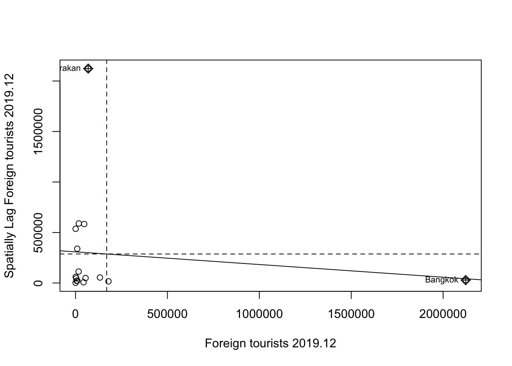
Moran scatterplot with standardised variable
december_data$Z.Total_value <- scale(december_data$total_value) %>%
as.vector nci2 <- moran.plot(december_data$Z.Total_value, rswm_q,
labels=as.character(december_data$ADM1_EN),
xlab="Z.Total_value 2019.12",
ylab="Spatially Lag z-Total_value 2019.12")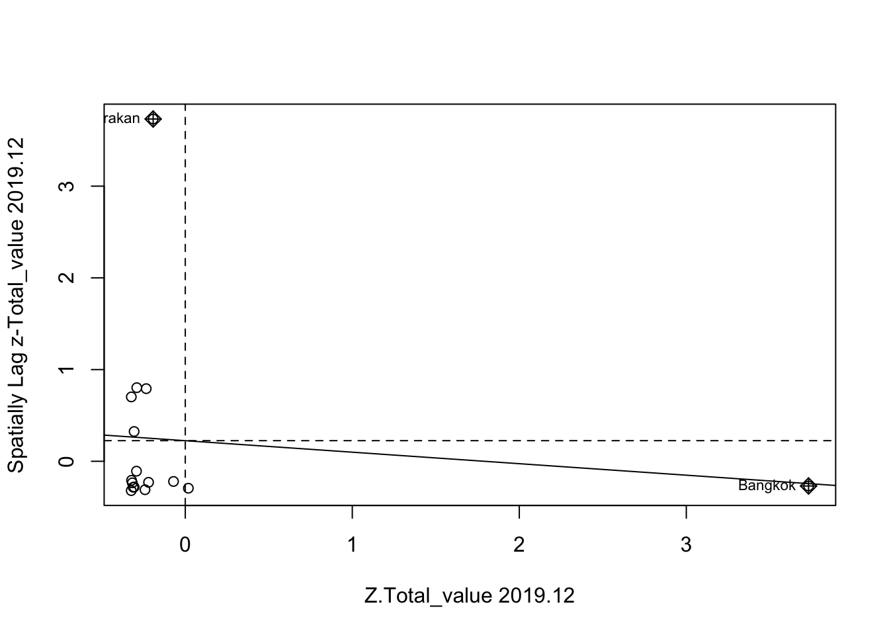
In both cases: Regression line: The regression line shows the general trend between the number of tourists and the number of spatially lagged tourists. Here, the slope of the regression line is very small and almost horizontal, indicating that the number of foreign tourists overall is not strongly correlated with the number of tourists in its neighboring areas.
Four quadrants
The dotted lines in the figure divide the scatter plot into four quadrants to help us identify “hot spots” and “cold spots”:
“High-High” (upper right): The number of tourists and the number of tourists in its neighbors are both high, representing a potential “hot spot” area.
“Low-High” (upper left): There are few tourists in this area, but many tourists in its neighbors, which may be a spatial outlier or transition area.
“Low-Low” (lower left): There are few tourists and few tourists in its neighbors, which may be a “cold spot”.
“High-Low” (lower right): There are many tourists in this area, but few tourists in its neighbors, which may be a spatial outlier
We can see that most of the points are concentrated in the lower left corner, indicating that these areas and their neighboring areas have relatively few tourists. “Bangkok” and Samut Prakan are located in the lower right corner and above, respectively, indicating that:
Bangkok has a very large number of foreign tourists, but its neighboring areas have relatively few tourists.
The neighboring areas of the Samut Prakan area have more tourists, while the area itself has fewer tourists.
LISA Cluster Maps
Prepare a LISA cluster map
quadrant <- vector(mode="numeric",length=nrow(localMI))derives the spatially lagged variable of interest (i.e. GDPPC) and centers the spatially lagged variable around its mean.
december_data$lag_total_value <- lag.listw(rswm_q, december_data$total_value)
DV <- december_data$lag_total_value - mean(december_data$lag_total_value) This is follow by centering the local Moran’s around the mean.
LM_I <- localMI[,1] - mean(localMI[,1]) Next, we will set a statistical significance level for the local Moran.
signif <- 0.05 These four command lines define the low-low (1), low-high (2), high-low (3) and high-high (4) categories.
quadrant[DV <0 & LM_I>0] <- 1
quadrant[DV >0 & LM_I<0] <- 2
quadrant[DV <0 & LM_I<0] <- 3
quadrant[DV >0 & LM_I>0] <- 4 Lastly, places non-significant Moran in the category 0.
quadrant[localMI[,5]>signif] <- 0In fact, we can combined all the steps into one single code chunk as shown below:
quadrant <- vector(mode="numeric",length=nrow(localMI))
december_data$lag_total_value <- lag.listw(rswm_q, december_data$total_value)
DV <- december_data$lag_total_value - mean(december_data$lag_total_value)
LM_I <- localMI[,1]
signif <- 0.05
quadrant[DV <0 & LM_I>0] <- 1
quadrant[DV >0 & LM_I<0] <- 2
quadrant[DV <0 & LM_I<0] <- 3
quadrant[DV >0 & LM_I>0] <- 4
quadrant[localMI[,5]>signif] <- 0Plotting LISA map
december_data.localMI$quadrant <- quadrant
colors <- c("#ffffff", "#2c7bb6", "#abd9e9", "#fdae61", "#d7191c")
clusters <- c("insignificant", "low-low", "low-high", "high-low", "high-high")
tm_shape(december_data.localMI) +
tm_fill(col = "quadrant",
style = "cat",
palette = colors[c(sort(unique(quadrant)))+1],
labels = clusters[c(sort(unique(quadrant)))+1],
popup.vars = c("")) +
tm_view(set.zoom.limits = c(11,17)) +
tm_borders(alpha=0.5)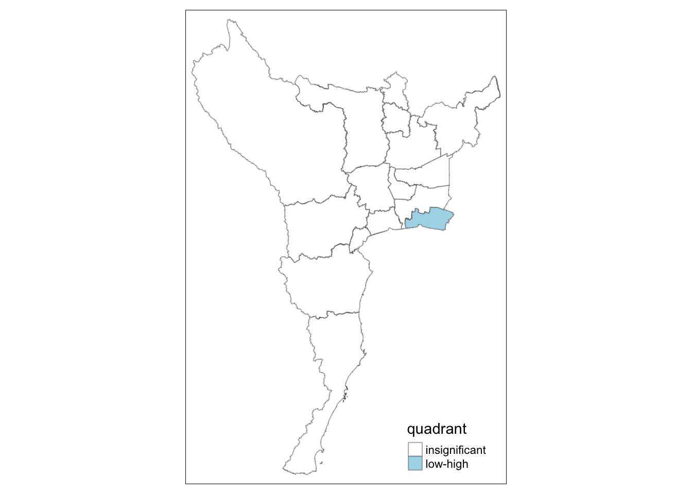
This means that Samut Prakan itself may not be attractive, resulting in low tourist numbers, but its neighboring areas such as Bangkok are relatively popular, attracting more tourists.
lisa_numbers_ratio_tourist_stay_yearly <- wm_q_ratio_tourist_stay_yearly %>%
mutate(local_moran = local_moran(
average_ratio, nb, wt, nsim = 99),
.before = 1) %>%
unnest(local_moran)Visualising local Moran’s I
tmap_mode("plot")tmap mode set to plottingmap9 <- tm_shape(lisa_numbers_ratio_tourist_stay_yearly) +
tm_fill("ii",
style = "pretty",
palette = "RdBu") +
tm_borders(alpha = 0.5) +
tm_view(set.zoom.limits = c(6,8)) +
tm_layout(
main.title = "local Moran's I of Annual Ratio Tourists",
main.title.size = 0.7)
map10 <- tm_shape(lisa_numbers_ratio_tourist_stay_yearly) +
tm_fill("p_ii_sim",
breaks = c(-Inf, 0.001, 0.01, 0.05, 0.1, Inf),
palette = "-Blues") +
tm_borders(alpha = 0.5) +
tm_layout(main.title = "p-value of local Moran's I of Annual Ratio Tourists",
main.title.size = 0.7)
tmap_arrange(map9, map10, ncol = 2)Variable(s) "ii" contains positive and negative values, so midpoint is set to 0. Set midpoint = NA to show the full spectrum of the color palette.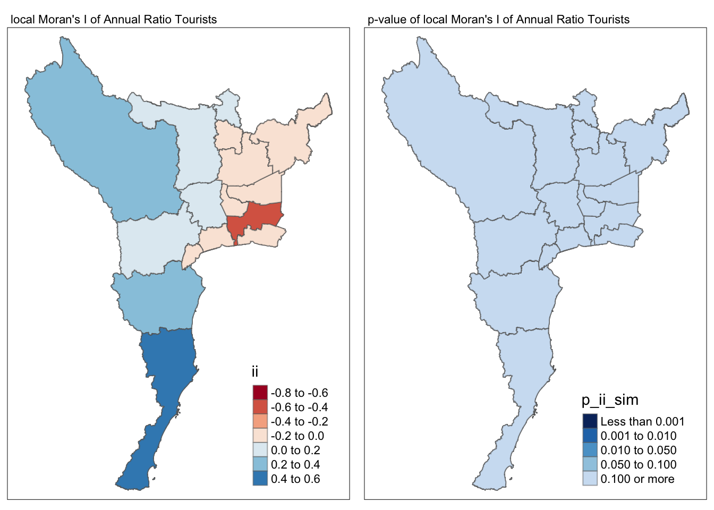
The left map indicates that blue areas indicate positive local Moran’s index, which means that the stay rates in these areas are similar to those in the surrounding areas, and these areas may be clusters of higher stay rates.
light red areas indicate negative local Moran’s index, which means that the stay rates in these areas are different from those in the surrounding areas, and may form isolated areas of low stay rates.
Areas with neutral colors (close to 0) indicate that there is no significant spatial autocorrelation and the distribution of stay rates is relatively random.
However the right map indicates that the stay rates in these areas have no obvious spatial dependence or agglomeration.
Summary
Through the analysis of Local Moran’s I and p values, tourism activities in central Thailand (especially Bangkok and its surrounding areas) show significant autocorrelation and clustering effects in space.
The data of local and foreign tourists in Bangkok and surrounding areas show a significant tourist clustering effect. The annual and monthly tourist data show that Bangkok is not only a major tourist destination, but surrounding provinces such as Pathum Thani and Nonthaburi are also important tourist hubs.
The high stay ratio of tourists in southern provinces such as Nakhon Si Thammarat and Songkhla indicates that these areas may be popular places for vacations and long-term stays.
Emerging Hot Spots Analysis (EHSA)
An analytical method for detecting spatial and spatiotemporal patterns, often used to identify hot spots and cold spots in geographic areas or data. It can not only identify current hot and cold spots, but also discover emerging, persistent, declining or temporary hot and cold spots by analyzing trends over time.
Main Types of EHSA：
Persistent Hot Spot: An area that has been a hot spot for the entire time period.
Emerging Hot Spot: An area that has recently become a hot spot, perhaps due to some event or trend.
Diminishing Hot Spot: An area that was a hot spot but is losing its influence.
Rebounding Hot Spot: An area that was a hot spot before, then disappeared or weakened, but has become a hot spot again.
Sporadic Hot Spot: An area that is sometimes a hot spot and sometimes not during a time period.
Cold Spot: The opposite of a hot spot, a cold spot indicates that the area has a low value for a period of time, and may represent a low activity or low density area of a phenomenon.
Computing Gi*
A method in geospatial statistics used to identify hot spots and cold spots in spatial data. It is a local spatial autocorrelation statistic used to detect whether there is a significant clustering pattern within a given spatial unit (such as a geographic area), that is, whether the value of the area is significantly higher or lower than its surrounding neighboring areas.
tourist_numbers_thai_yearly_st2 <- tourist_numbers_thai_yearly_st %>%
activate("geometry")
tourist_numbers_thai_yearly_st_nb <- tourist_numbers_thai_yearly_st2 %>%
mutate(
centroid = st_centroid(geometry),
nb = include_self(st_contiguity(geometry)),
wt = st_inverse_distance(nb, centroid, scale = 1, alpha = 1),
.before = 1
) %>%
set_nbs("nb") %>%
set_wts("wt")gi_stars_tourist_numbers_thai_yearly <- tourist_numbers_thai_yearly_st_nb %>%
group_by(year) %>%
mutate(
gi_star = local_gstar_perm(total_value,nb,wt)
) %>%
tidyr::unnest(gi_star)Mann-Kendall Test A monotonic series or function is one that only increases (or decreases) and never changes direction. So long as the function either stays flat or continues to increase, it is monotonic.
H0: No monotonic trend
H1: Monotonic trend is present
Interpretation
Reject the null-hypothesis null if the p-value is smaller than the alpha value (i.e. 1-confident level) Tau ranges between -1 and 1 where:
-1 is a perfectly decreasing series, and
1 is a perfectly increasing series.
Mann-Kendall Test on Gi
With these Gi* measures we can then evaluate each location for a trend using the Mann-Kendall test. The code chunk below uses Bangkok.
bkg <- gi_stars_tourist_numbers_thai_yearly %>%
ungroup() %>%
filter(ADM1_EN == "Bangkok") %>%
select(ADM1_EN, year, gi_star)ggplot(data = bkg,
aes(x = year,
y = gi_star)) +
geom_line() +
theme_light()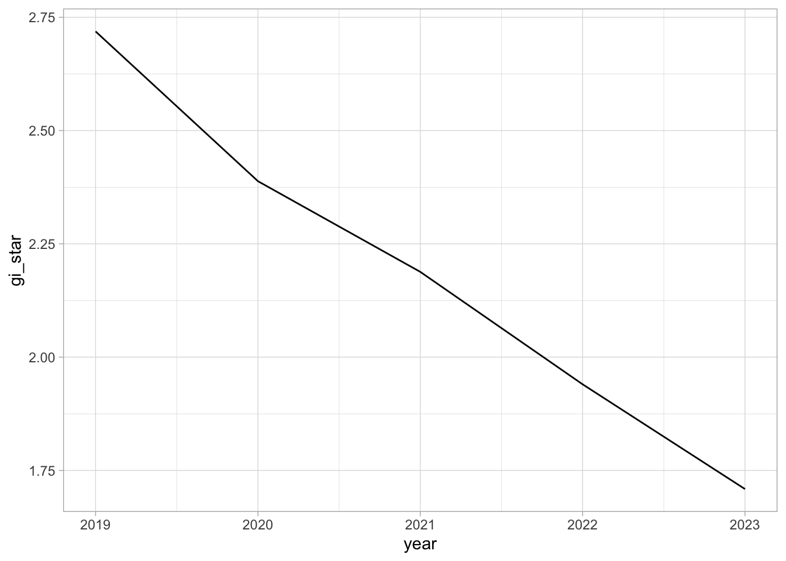
Printing Mann-Kendall test report
bkg %>%
summarise(mk = list(
unclass(
Kendall::MannKendall(gi_star)))) %>%
tidyr::unnest_wider(mk)# A tibble: 1 × 5
tau sl S D varS
<dbl> <dbl> <dbl> <dbl> <dbl>
1 -1 0.0275 -10 10 16.7From the above result, sl is the p-value < 0.05. With reference to the results, we will reject the hypothesis null and tau=-1 infer that a downward trend.
Mann-Kendall test data.frame
We can replicate this for each location by using group_by() of dplyr package.
ehsa_tourist_numbers_thai_yearly <- gi_stars_tourist_numbers_thai_yearly %>%
group_by(ADM1_EN) %>%
summarise(mk = list(
unclass(
Kendall::MannKendall(gi_star)))) %>%
tidyr::unnest_wider(mk)
head(ehsa_tourist_numbers_thai_yearly)# A tibble: 6 × 6
ADM1_EN tau sl S D varS
<chr> <dbl> <dbl> <dbl> <dbl> <dbl>
1 Ang Thong -0.400 0.462 -4 10 16.7
2 Bangkok -1 0.0275 -10 10 16.7
3 Kanchanaburi 0.800 0.0864 8 10 16.7
4 Nakhon Pathom -0.800 0.0864 -8 10 16.7
5 Nonthaburi -1 0.0275 -10 10 16.7
6 Pathum Thani -1 0.0275 -10 10 16.7We can also sort to show significant emerging hot/cold spots
emerging <- ehsa_tourist_numbers_thai_yearly %>%
arrange(sl, abs(tau)) %>%
slice(1:10)
head(emerging)# A tibble: 6 × 6
ADM1_EN tau sl S D varS
<chr> <dbl> <dbl> <dbl> <dbl> <dbl>
1 Phetchaburi 1 0.0275 10 10 16.7
2 Prachuap Khiri Khan 1 0.0275 10 10 16.7
3 Bangkok -1 0.0275 -10 10 16.7
4 Nonthaburi -1 0.0275 -10 10 16.7
5 Pathum Thani -1 0.0275 -10 10 16.7
6 Samut Prakan -1 0.0275 -10 10 16.7Performing Emerging Hotspot Analysis
ehsa_tourist_numbers_thai_yearly <- emerging_hotspot_analysis(
x = tourist_numbers_thai_yearly_st_nb,
.var = "total_value",
k = 1,
nsim = 99,
nb_col = "nb",
wt_col = "wt"
)ggplot(data = ehsa_tourist_numbers_thai_yearly,
aes(x = classification)) +
geom_bar()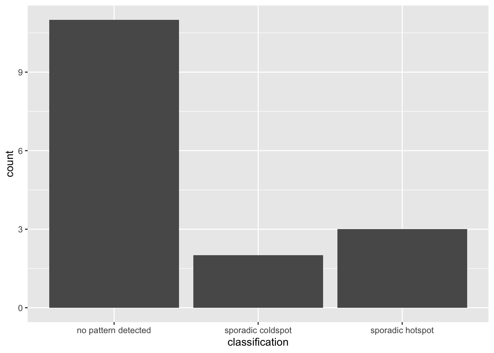
No Pattern Detected: Most areas (12.5) show no significant spatial hot or cold spot patterns. This shows that in these areas, the data does not show a specific hot or cold spot trend, and may be areas where changes are relatively uniform.
Sporadic Coldspot: There are some areas (around 1-2) that exhibit an intermittent coldspot pattern, which means that these areas exhibit lower values during certain periods of time that are not as good as their surroundings. Significantly.
Sporadic Hotspot: There are a few areas (approximately 1-2) that exhibit an intermittent hotspot pattern, meaning that these areas exhibit higher values during certain periods of time, showing contrast with their surroundings.
Visualising EHSA
b1_filtered_ehsa <- b1_filtered %>%
left_join(ehsa_tourist_numbers_thai_yearly,
by = join_by(ADM1_EN == location))b1_filtered_sig <- b1_filtered_ehsa %>%
filter(p_value > 0.5)
tmap_mode("plot")tmap mode set to plottingtm_shape(b1_filtered_ehsa) +
tm_polygons("classification") +
tm_borders(alpha = 0.5) +
tm_shape(b1_filtered_sig) +
tm_borders(alpha = 0.4)Warning: One tm layer group has duplicated layer types, which are omitted. To
draw multiple layers of the same type, use multiple layer groups (i.e. specify
tm_shape prior to each of them).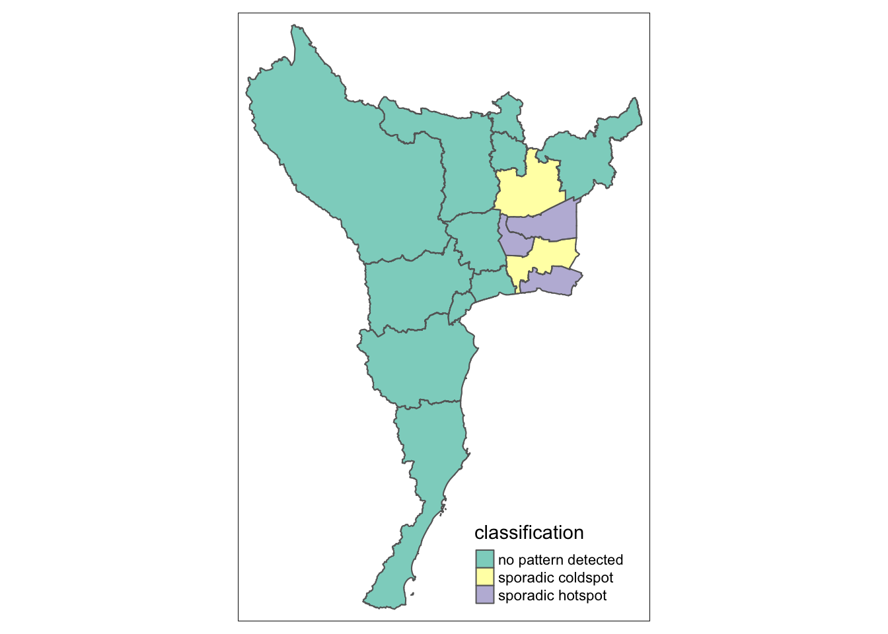
The yellow area represents the sporadic cold spot, which means that in these areas, the tourist stay rate shows a lower value at certain times, and this phenomenon is not continuous, but sporadic. Therefore, the number of the tourists in these areas is lower than that in the surrounding areas.
The purple area represents the sporadic hot spot, which means that these areas have a higher number of tourists at certain times, but this high stay rate phenomenon is also sporadic, not continuous. This shows that the tourist stay rate in these areas is higher than that in the surrounding areas, but this phenomenon is not fixed.
tourist_numbers_local_monthly2019_st2 <- tourist_numbers_local_monthly2019_st %>%
activate("geometry")
tourist_numbers_local_monthly_st_nb <- tourist_numbers_local_monthly2019_st2 %>%
mutate(
centroid = st_centroid(geometry),
nb = include_self(st_contiguity(geometry)),
wt = st_inverse_distance(nb, centroid, scale = 1, alpha = 1),
.before = 1
) %>%
set_nbs("nb") %>%
set_wts("wt")gi_stars_tourist_numbers_local_monthly <- tourist_numbers_local_monthly_st_nb %>%
group_by(month) %>%
mutate(
gi_star = local_gstar_perm(total_value,nb,wt)
) %>%
tidyr::unnest(gi_star)bkglm <- gi_stars_tourist_numbers_local_monthly %>%
ungroup() %>%
filter(ADM1_EN == "Bangkok") %>%
select(ADM1_EN, month, gi_star)ggplot(data = bkglm,
aes(x = month,
y = gi_star)) +
geom_line() +
theme_light()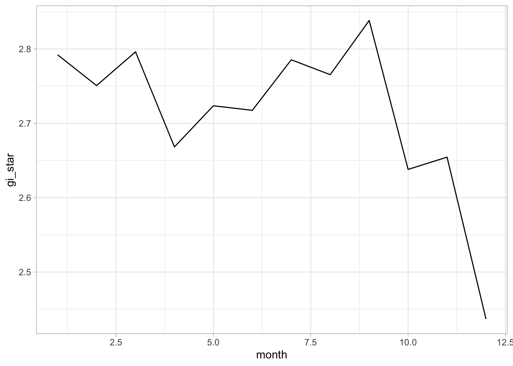
Printing Mann-Kendall test report
bkglm %>%
summarise(mk = list(
unclass(
Kendall::MannKendall(gi_star)))) %>%
tidyr::unnest_wider(mk)# A tibble: 1 × 5
tau sl S D varS
<dbl> <dbl> <dbl> <dbl> <dbl>
1 -0.364 0.115 -24 66.0 213.From the above result, sl is the p-value > 0.05. With reference to the results, we will not reject the hypothesis null but we can see that a downward trend at the end of 2019,which means the epidemic indeed affect the number of the foreign tourists.
Mann-Kendall test data.frame We can replicate this for each location by using group_by() of dplyr package.
ehsa_tourist_numbers_local_month <- gi_stars_tourist_numbers_local_monthly %>%
group_by(ADM1_EN) %>%
summarise(mk = list(
unclass(
Kendall::MannKendall(gi_star)))) %>%
tidyr::unnest_wider(mk)
head(ehsa_tourist_numbers_local_month)# A tibble: 6 × 6
ADM1_EN tau sl S D varS
<chr> <dbl> <dbl> <dbl> <dbl> <dbl>
1 Ang Thong -0.273 0.244 -18 66.0 213.
2 Bangkok -0.364 0.115 -24 66.0 213.
3 Kanchanaburi 0.667 0.00319 44 66.0 213.
4 Nakhon Pathom -0.0303 0.945 -2 66.0 213.
5 Nonthaburi -0.515 0.0236 -34 66.0 213.
6 Pathum Thani -0.455 0.0467 -30 66.0 213.We can also sort to show significant emerging hot/cold spots
emerging <- ehsa_tourist_numbers_local_month %>%
arrange(sl, abs(tau)) %>%
slice(1:10)
head(emerging)# A tibble: 6 × 6
ADM1_EN tau sl S D varS
<chr> <dbl> <dbl> <dbl> <dbl> <dbl>
1 Kanchanaburi 0.667 0.00319 44 66.0 213.
2 Saraburi 0.667 0.00319 44 66.0 213.
3 Suphan Buri 0.606 0.00749 40 66.0 213.
4 Nonthaburi -0.515 0.0236 -34 66.0 213.
5 Samut Prakan -0.485 0.0335 -32 66.0 213.
6 Pathum Thani -0.455 0.0467 -30 66.0 213.Performing Emerging Hotspot Analysis
ehsa_tourist_numbers_local_month <- emerging_hotspot_analysis(
x = tourist_numbers_local_monthly_st_nb,
.var = "total_value",
k = 1,
nsim = 99,
nb_col = "nb",
wt_col = "wt"
)ggplot(data = ehsa_tourist_numbers_local_month,
aes(x = classification)) +
geom_bar()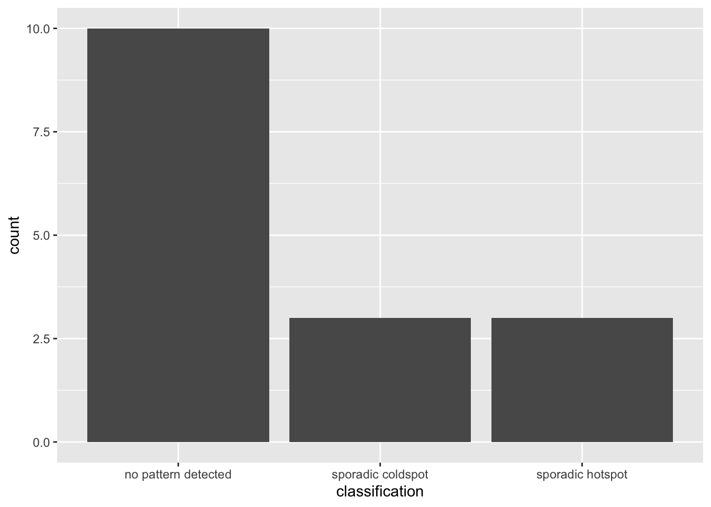
No Pattern Detected: Most areas show no significant spatial hot or cold spot patterns. This shows that in these areas, the data does not show a specific hot or cold spot trend, and may be areas where changes are relatively uniform.
Sporadic Coldspot: There are some areas (around 2) that exhibit an intermittent coldspot pattern, which means that these areas exhibit lower values during certain periods of time that are not as good as their surroundings. Significantly.
Sporadic Hotspot: There are a few areas (approximately 3) that exhibit an intermittent hotspot pattern, meaning that these areas exhibit higher values during certain periods of time, showing contrast with their surroundings.
Visualising EHSA
b1_filtered_ehsa_lm <- b1_filtered %>%
left_join(ehsa_tourist_numbers_local_month,
by = join_by(ADM1_EN == location))b1_filtered_sig_lm <- b1_filtered_ehsa_lm %>%
filter(p_value < 0.5)
tmap_mode("plot")tmap mode set to plottingtm_shape(b1_filtered_ehsa_lm) +
tm_polygons("classification") +
tm_borders(alpha = 0.5) +
tm_shape(b1_filtered_sig_lm) +
tm_borders(alpha = 0.4)Warning: One tm layer group has duplicated layer types, which are omitted. To
draw multiple layers of the same type, use multiple layer groups (i.e. specify
tm_shape prior to each of them).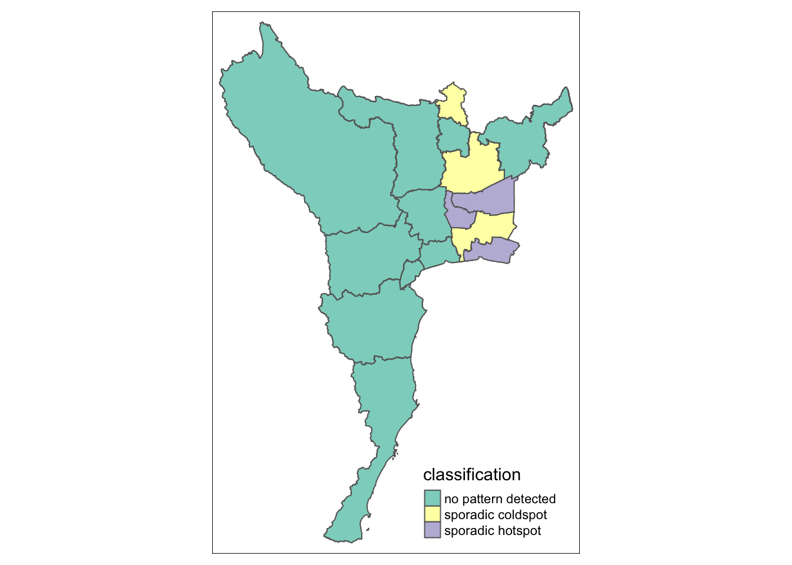
tourist_numbers_froeign_monthly2019_st2 <- tourist_numbers_froeign_monthly2019_st %>%
activate("geometry")
tourist_numbers_froeign_monthly_st_nb <- tourist_numbers_froeign_monthly2019_st2 %>%
mutate(
centroid = st_centroid(geometry),
nb = include_self(st_contiguity(geometry)),
wt = st_inverse_distance(nb, centroid, scale = 1, alpha = 1),
.before = 1
) %>%
set_nbs("nb") %>%
set_wts("wt")gi_stars_tourist_numbers_froeign_monthly <- tourist_numbers_froeign_monthly_st_nb %>%
group_by(month) %>%
mutate(
gi_star = local_gstar_perm(total_value,nb,wt)
) %>%
tidyr::unnest(gi_star)bkgm <- gi_stars_tourist_numbers_froeign_monthly %>%
ungroup() %>%
filter(ADM1_EN == "Bangkok") %>%
select(ADM1_EN, month, gi_star)ggplot(data = bkgm,
aes(x = month,
y = gi_star)) +
geom_line() +
theme_light()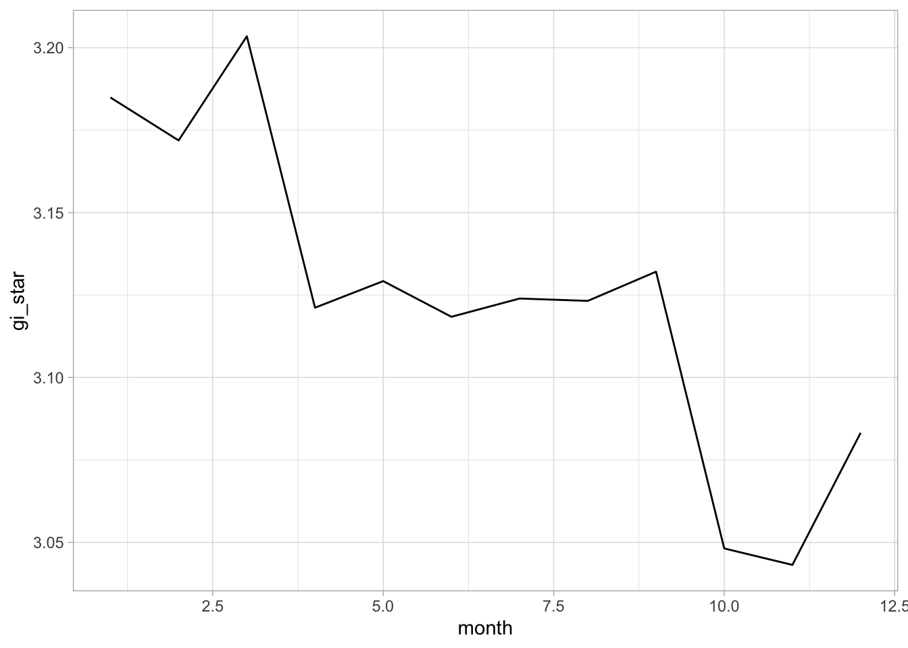
Printing Mann-Kendall test report
bkgm %>%
summarise(mk = list(
unclass(
Kendall::MannKendall(gi_star)))) %>%
tidyr::unnest_wider(mk)# A tibble: 1 × 5
tau sl S D varS
<dbl> <dbl> <dbl> <dbl> <dbl>
1 -0.576 0.0112 -38 66.0 213.From the above result, sl is the p-value < 0.05. With reference to the results, we will reject the hypothesis null and tau < 0 infer that a downward trend.
Mann-Kendall test data.frame We can replicate this for each location by using group_by() of dplyr package.
ehsa_tourist_numbers_foreign_month <- gi_stars_tourist_numbers_froeign_monthly %>%
group_by(ADM1_EN) %>%
summarise(mk = list(
unclass(
Kendall::MannKendall(gi_star)))) %>%
tidyr::unnest_wider(mk)
head(ehsa_tourist_numbers_foreign_month)# A tibble: 6 × 6
ADM1_EN tau sl S D varS
<chr> <dbl> <dbl> <dbl> <dbl> <dbl>
1 Ang Thong 0.212 0.373 14 66.0 213.
2 Bangkok -0.576 0.0112 -38 66.0 213.
3 Kanchanaburi 0.0606 0.837 4 66.0 213.
4 Nakhon Pathom 0.0909 0.732 6 66.0 213.
5 Nonthaburi 0.0606 0.837 4 66.0 213.
6 Pathum Thani 0.182 0.451 12 66.0 213.We can also sort to show significant emerging hot/cold spots
emerging <- ehsa_tourist_numbers_foreign_month %>%
arrange(sl, abs(tau)) %>%
slice(1:10)
head(emerging)# A tibble: 6 × 6
ADM1_EN tau sl S D varS
<chr> <dbl> <dbl> <dbl> <dbl> <dbl>
1 Saraburi 0.636 0.00493 42 66.0 213.
2 Bangkok -0.576 0.0112 -38 66.0 213.
3 Samut Prakan -0.455 0.0467 -30 66.0 213.
4 Ang Thong 0.212 0.373 14 66.0 213.
5 Pathum Thani 0.182 0.451 12 66.0 213.
6 Phra Nakhon Si Ayutthaya 0.152 0.537 10 66.0 213.Performing Emerging Hotspot Analysis
ehsa_tourist_numbers_foreign_month <- emerging_hotspot_analysis(
x = tourist_numbers_froeign_monthly_st_nb,
.var = "total_value",
k = 1,
nsim = 99,
nb_col = "nb",
wt_col = "wt"
)ggplot(data = ehsa_tourist_numbers_foreign_month,
aes(x = classification)) +
geom_bar()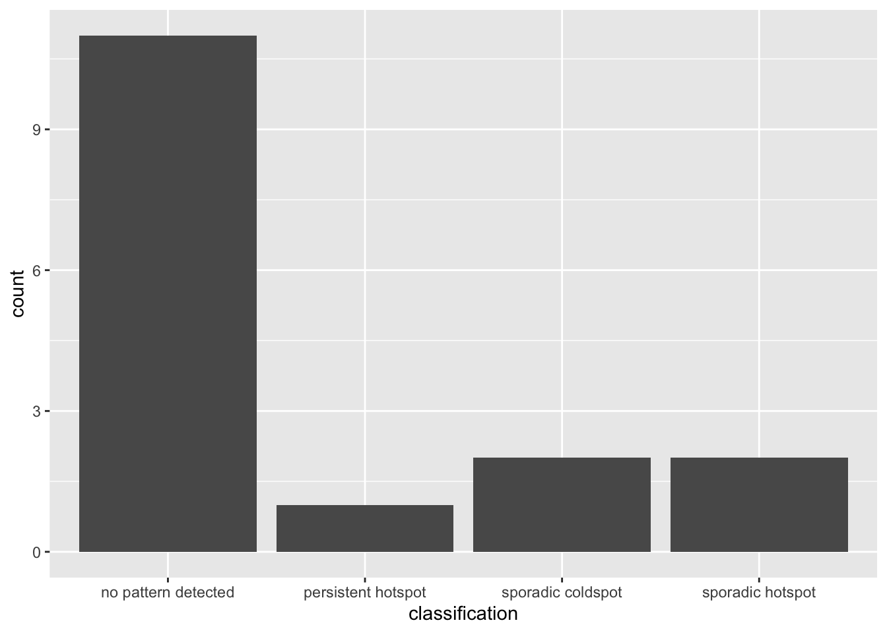
No pattern detected: This is the largest category, with more than 10 areas with no significant pattern detected.
Sporadic coldspot: This type of area ranks second, with about 3 areas classified as sporadic coldspots, indicating that there are significantly lower values than the surrounding areas during certain periods.
Sporadic hotspot: About 2 areas are classified as sporadic hotspots, indicating that these areas have significantly higher values than the surrounding areas during certain periods.
Persistent hotspot: Almost few areas in this figure are detected as persistent hotspots, indicating that there are very few areas in this category.
Visualising EHSA
b1_filtered_ehsa_fm <- b1_filtered %>%
left_join(ehsa_tourist_numbers_foreign_month,
by = join_by(ADM1_EN == location))b1_filtered_sig_fm <- b1_filtered_ehsa_fm %>%
filter(p_value < 0.5)
tmap_mode("plot")tmap mode set to plottingtm_shape(b1_filtered_ehsa_fm) +
tm_polygons("classification") +
tm_borders(alpha = 0.5) +
tm_shape(b1_filtered_sig_fm) +
tm_borders(alpha = 0.4)Warning: One tm layer group has duplicated layer types, which are omitted. To
draw multiple layers of the same type, use multiple layer groups (i.e. specify
tm_shape prior to each of them).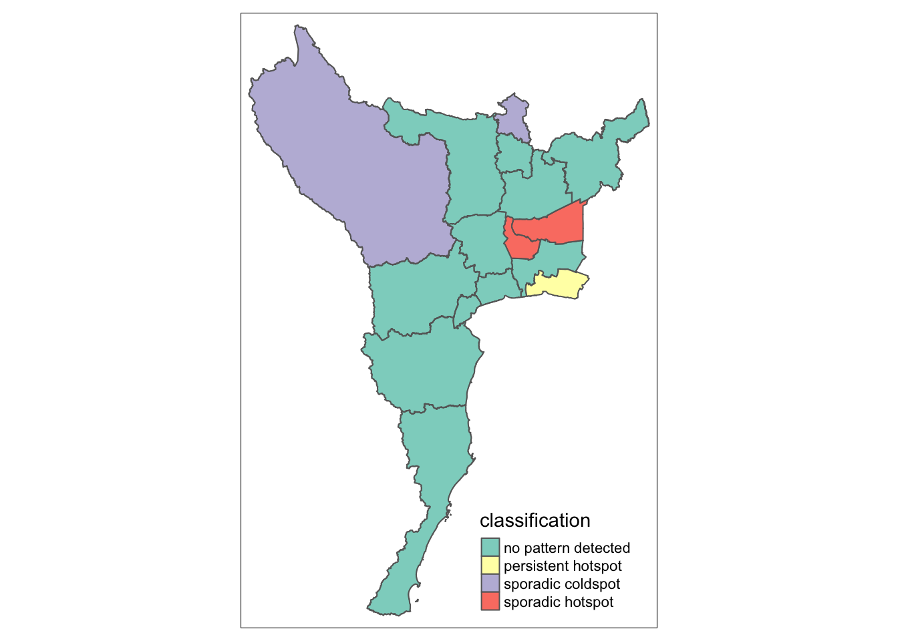
ratio_tourist_stay_yearly_st2 <- ratio_tourist_stay_yearly_st %>%
activate("geometry")
ratio_tourist_stay_yearly_st_nb <- ratio_tourist_stay_yearly_st2 %>%
mutate(
centroid = st_centroid(geometry),
nb = include_self(st_contiguity(geometry)),
wt = st_inverse_distance(nb, centroid, scale = 1, alpha = 1),
.before = 1
) %>%
set_nbs("nb") %>%
set_wts("wt")gi_stars_ratio_tourist_stay_yearly <- ratio_tourist_stay_yearly_st_nb %>%
group_by(year) %>%
mutate(
gi_star = local_gstar_perm(average_ratio,nb,wt)
) %>%
tidyr::unnest(gi_star)bkgry <- gi_stars_ratio_tourist_stay_yearly %>%
ungroup() %>%
select(ADM1_EN, year, gi_star)ggplot(data = bkgry,
aes(x = year,
y = gi_star)) +
geom_line() +
theme_light()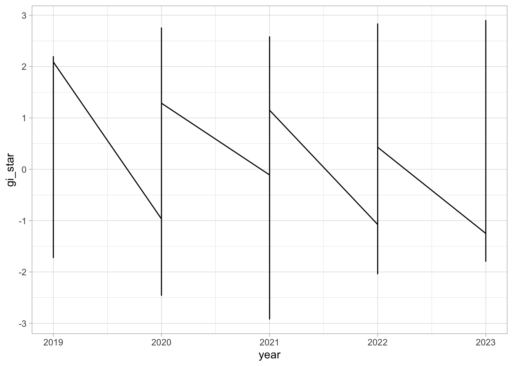
Printing Mann-Kendall test report
bkgry %>%
summarise(mk = list(
unclass(
Kendall::MannKendall(gi_star)))) %>%
tidyr::unnest_wider(mk)# A tibble: 1 × 5
tau sl S D varS
<dbl> <dbl> <dbl> <dbl> <dbl>
1 -0.0576 0.452 -182 3160. 57933.n the above result, sl is the p-value > 0.05. With reference to the results, we will reject the hypothesis null and infer that a downward trend.
Mann-Kendall test data.frame We can replicate this for each location by using group_by() of dplyr package.
ehsa_ratio_tourist_stay_yearly <- gi_stars_ratio_tourist_stay_yearly %>%
group_by(ADM1_EN) %>%
summarise(mk = list(
unclass(
Kendall::MannKendall(gi_star)))) %>%
tidyr::unnest_wider(mk)
head(ehsa_ratio_tourist_stay_yearly)# A tibble: 6 × 6
ADM1_EN tau sl S D varS
<chr> <dbl> <dbl> <dbl> <dbl> <dbl>
1 Ang Thong -0.800 0.0864 -8 10 16.7
2 Bangkok 0 1 0 10 16.7
3 Kanchanaburi -0.400 0.462 -4 10 16.7
4 Nakhon Pathom -0.800 0.0864 -8 10 16.7
5 Nonthaburi 0 1 0 10 16.7
6 Pathum Thani 0.400 0.462 4 10 16.7We can also sort to show significant emerging hot/cold spots
emerging <- ehsa_ratio_tourist_stay_yearly %>%
arrange(sl, abs(tau)) %>%
slice(1:10)
head(emerging)# A tibble: 6 × 6
ADM1_EN tau sl S D varS
<chr> <dbl> <dbl> <dbl> <dbl> <dbl>
1 Prachuap Khiri Khan 1 0.0275 10 10 16.7
2 Suphan Buri -1 0.0275 -10 10 16.7
3 Ang Thong -0.800 0.0864 -8 10 16.7
4 Nakhon Pathom -0.800 0.0864 -8 10 16.7
5 Sing Buri -0.800 0.0864 -8 10 16.7
6 Phra Nakhon Si Ayutthaya -0.600 0.221 -6 10 16.7Performing Emerging Hotspot Analysis
ehsa_ratio_tourist_stay_yearly <- emerging_hotspot_analysis(
x = ratio_tourist_stay_yearly_st_nb,
.var = "average_ratio",
k = 1,
nsim = 99,
nb_col = "nb",
wt_col = "wt"
)ggplot(data = ehsa_ratio_tourist_stay_yearly,
aes(x = classification)) +
geom_bar()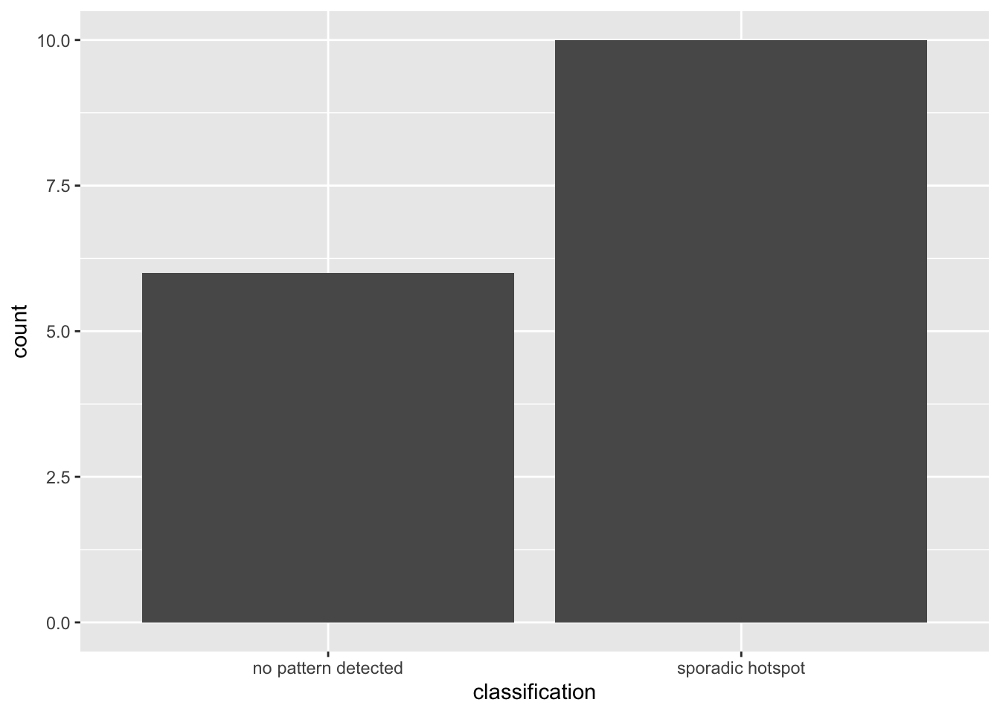
No pattern detected means these areas do not have significant clustering (hotspot) or sparse (coldspot) phenomena, and the stay rate may be affected by other external factors rather than spatial factors.
Areas with occasional hotspots indicate that the stay rate of tourists in these areas is high and significantly different from the stay rate in surrounding areas. This phenomenon may be related to specific tourist attractions, infrastructure or seasonal activities
Visualising EHSA
b1_filtered_ehsa_sy <- b1_filtered %>%
left_join(ehsa_ratio_tourist_stay_yearly,
by = join_by(ADM1_EN == location))b1_filtered_sig_sy <- b1_filtered_ehsa_sy %>%
filter(p_value > 0.5)
tmap_mode("plot")tmap mode set to plottingtm_shape(b1_filtered_ehsa_sy) +
tm_polygons("classification") +
tm_borders(alpha = 0.5) +
tm_shape(b1_filtered_sig_sy) +
tm_borders(alpha = 0.4)Warning: One tm layer group has duplicated layer types, which are omitted. To
draw multiple layers of the same type, use multiple layer groups (i.e. specify
tm_shape prior to each of them).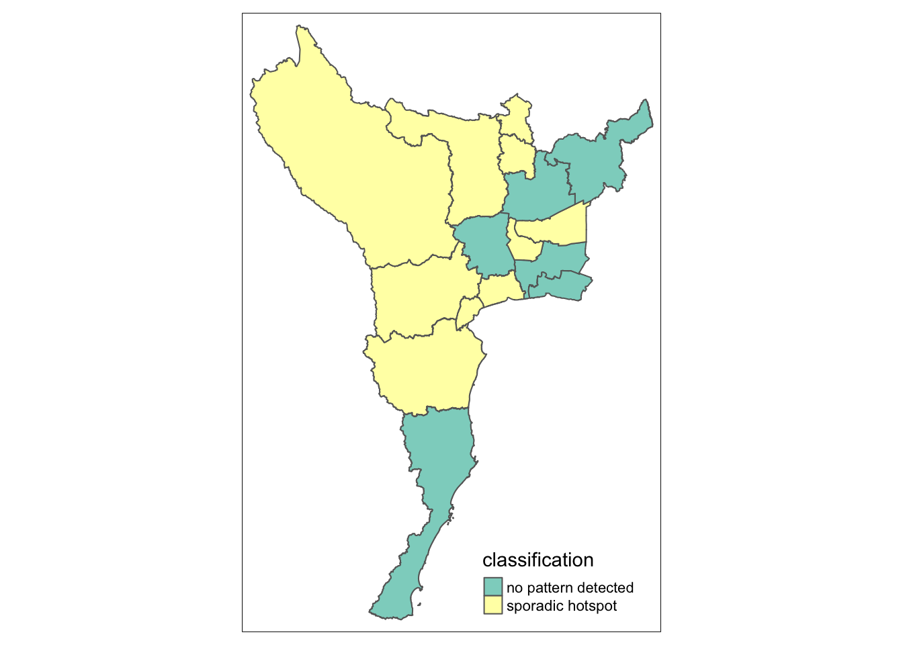
Summary
Through EHSA analysis, some regions show different types of hotspots and coldspots. Among them, several regions are shown as “sporadic hotspots”, that is, the stay ratio in these regions has intermittent high hotspots in the time period. Some areas in the north are shown as cold spots, which means that the tourist stay ratio is low and shows a regular decline. Monthly analysis of foreign tourists:
From the EHSA analysis, it is known that the number of foreign tourists fluctuates between months, and some regions show hotspots, especially in areas with developed tourism. Sporadic hotspots indicate that these areas will attract a large number of foreign tourists in certain months. Monthly analysis of local tourists:
Compared with foreign tourists, the hotspot areas of local tourists are more concentrated. In particular, some core tourist cities have relatively stable monthly tourist volume and form hotspots, while the cold spots in the periphery may indicate that these places are not common destinations for local tourists. Annual tourist data:
Analyzed by year, different types of patterns are shown across the country. Popular tourist areas such as the southern coastal areas have long remained hot spots, while some areas have shown cold spots or no obvious patterns. The emergence of these patterns may be related to changes in the economy, transportation or infrastructure.
References
1.Tin Seong Kam.Spatail weight and applications 8.9.10
2.Tin Seong Kam.In-class Exercise 4.5.6
3.Spacetime and spacetime cubes
4.Kim, M.; Lee, S. (2023). Identification of Emerging Roadkill Hotspots on Korean Expressways Using Space–Time Cubes. International Journal of Environmental Research and Public Health, 20, 4896. https://doi.org/10.3390/ijerph20064896.